<!doctype html>
<html lang="en">
<head>
  <meta charset="utf-8">
  <meta name="viewport" content="width=device-width, initial-scale=1">
  <title>arxiv digest — 2026-08-26</title>
  <style>
:root {
  --bg: #ffffff;
  --fg: #1f2328;
  --muted: #59636e;
  --border: #d0d7de;
  --card: #f6f8fa;
  --link: #0969da;
}
body {
  max-width: 980px;
  margin: 0 auto;
  padding: 2rem 1rem 5rem;
  font-family: -apple-system, BlinkMacSystemFont, "Segoe UI", Helvetica, Arial, sans-serif;
  line-height: 1.55;
  color: var(--fg);
  background: var(--bg);
}
a { color: var(--link); }
img { max-width: 100%; height: auto; }
pre, code { background: var(--card); border-radius: 6px; }
pre { padding: 1rem; overflow-x: auto; }
blockquote { border-left: 4px solid var(--border); padding-left: 1rem; color: var(--muted); }
details { margin: 0.6rem 0; }
summary { cursor: pointer; font-weight: 600; }
.paper-figures-scroll {
  display: flex;
  gap: 1rem;
  overflow-x: auto;
  overscroll-behavior-x: contain;
  padding: 0.75rem 0.25rem 1rem;
  margin: 1rem 0 1.25rem;
  border-top: 1px solid var(--border);
  border-bottom: 1px solid var(--border);
  scroll-snap-type: x proximity;
}
.paper-figure-card {
  flex: 0 0 min(260px, 72vw);
  scroll-snap-align: start;
  background: var(--card);
  border: 1px solid var(--border);
  border-radius: 12px;
  padding: 0.55rem;
}
.paper-figure-card img {
  display: block;
  width: 100%;
  max-height: 240px;
  object-fit: contain;
  background: white;
  border-radius: 8px;
}
.paper-figure-caption {
  display: block;
  margin-top: 0.5rem;
  color: var(--muted);
  font-size: 0.85rem;
}
.figure-strip-hint {
  color: var(--muted);
  font-size: 0.9rem;
  margin-bottom: -0.3rem;
}
</style>
  <!-- MathJax: renders $...$ inline math and $$...$$ display math, plus
       \(...\) and \[...\]. Loaded from the official CDN; works offline
       once cached. Configured to skip code/pre blocks so arxiv IDs that
       look like dollar amounts don't get mangled. -->
  <script>
    window.MathJax = {
      tex: {
        inlineMath: [['$', '$'], ['\\(', '\\)']],
        displayMath: [['$$', '$$'], ['\\[', '\\]']],
        processEscapes: true,
        processEnvironments: true
      },
      options: {
        skipHtmlTags: ['script', 'noscript', 'style', 'textarea', 'pre', 'code'],
        ignoreHtmlClass: 'tex2jax_ignore',
        processHtmlClass: 'tex2jax_process'
      }
    };
  </script>
  <script id="MathJax-script" async
    src="https://cdn.jsdelivr.net/npm/mathjax@3/es5/tex-chtml.js"></script>
</head>
<body>
<header style="background-color: #333; color: white; padding: 15px; margin-bottom: 20px;">
  <h1 style="margin: 0; font-size: 24px;">
    <a href="https://ochelpan.github.io/arXiv_clean/" style="color: white; text-decoration: none;">Main</a>
  </h1>
</header>

<h1>Daily arXiv Report</h1>

<hr>
<p>
<a href="index.html">← Index</a>
 · <a href="papers_06.html">← Previous</a> · <a href="papers_08.html">Next →</a>
</p>
<hr>

<h2>Papers 121–140</h2>
<p><a id="paper-2608.23460"></a></p>
<h3 id="satisfying-quantum-codes-physics-informed-and-hardware-aware-code-design-with-sat-solvers"><a href="http://arxiv.org/abs/2608.23460v1">Satisfying Quantum Codes: Physics-Informed and Hardware-Aware Code Design with SAT Solvers</a></h3>
<p><strong>Authors:</strong> Ben DalFavero, William M. Watkins, Margarite L. LaBorde, Vincent Russo, Ethan Egger, Gregory Quiroz, Ryan LaRose<br>
<strong>Type:</strong> theory · <strong>Category:</strong> quantum information and computing · <strong>PDF:</strong> <a href="https://arxiv.org/pdf/2608.23460v1">https://arxiv.org/pdf/2608.23460v1</a><br>
<strong>Analysis basis:</strong> full PDF text, analyzed in chunks
<strong>Topic relevance:</strong> <code>analog quantum simulation</code> <strong>1/5</strong></p>
<div class="figure-strip-hint">↔ Scroll figures horizontally</div>
<div class="paper-figures-scroll">
<figure class="paper-figure-card">
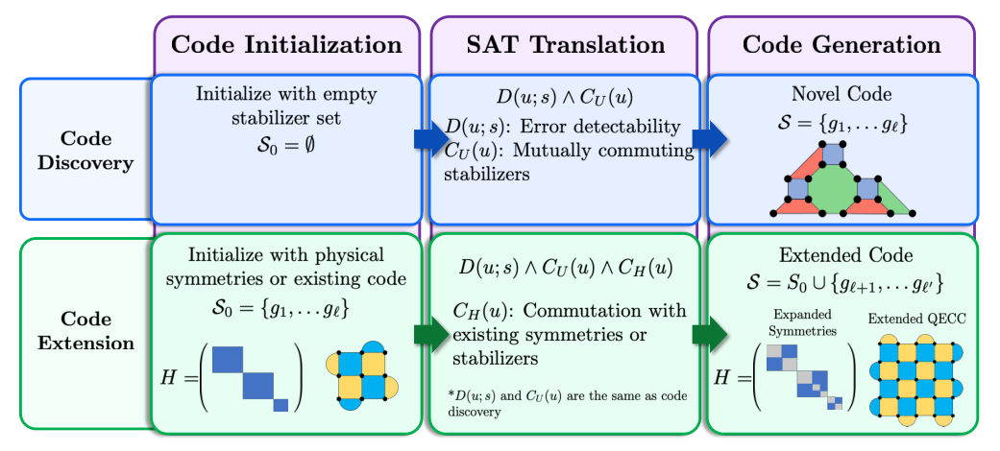
<figcaption class="paper-figure-caption"><b>Fig 1.</b> Figure 1. Overview of our quantum code design framework. Our framework enables two categories of code design: code discovery and code extension. In the former, the code is initialized with an empty stabilizer set, while in the latter the initial set S0 is determined by a predetermined code or a set of physics-informed symmetries captured within the Hamiltonian H. Our SAT-based framework enables translation between both code design scenarios through the symplectic form, which encodes information about both the error set E and stabilizers/symmetries. Solutions to the SAT problem lead to novel codes “from scratch” or extended codes that contain the initial stabilizers. Both code discovery and...</figcaption>
</figure>
<figure class="paper-figure-card">
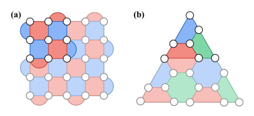
<figcaption class="paper-figure-caption"><b>Fig 2.</b> Figure 2. Illustration of distance-increasing extensions of quantum codes with mutation, shown here for two QLDPC codes. (a) A distance d = 3 rotated surface code overlaid on a d = 5 distance surface code. (b) A distance d = 3 tri- angular color code (the Steane code) overlaid on a distance d = 5 triangular color code. Note that, in both cases, there are checks along the boundary of the smaller code that must be altered. Thus, these are examples of distance-increasing extensions with mutation.</figcaption>
</figure>
<figure class="paper-figure-card">
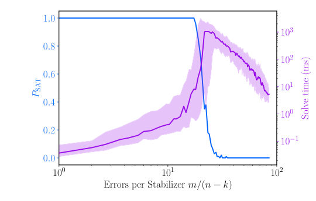
<figcaption class="paper-figure-caption"><b>Fig 3.</b> Figure 3. Demonstration of the SAT–UNSAT phase tran- sition which we empirically observe for random instances of k-code design (Def. 3). The order parameter is the number of errors per stabilizer m/(n −k) in the code design problem. In addition to the transition in satisfiability probability pSAT at the critical value, the solve time peaks at this critical value. Additional numerical results and cases are discussed in detail in Appendix D.</figcaption>
</figure>
<figure class="paper-figure-card">
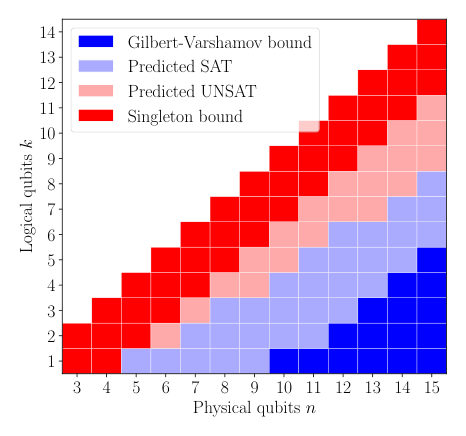
<figcaption class="paper-figure-caption"><b>Fig 4.</b> Figure 4. Predicted existence of [[n, k, 3]] stabilizer codes as a function of the number of physical qubits n and logical qubits k. Dark blue denotes parameters for which code existence is guaranteed by the quantum Gilbert–Varshamov bound, while dark red denotes parameters excluded by the quantum Singleton bound. In the intermediate region, the empirical scaling model for the critical error-set size bmc(n, k, w), with w = d −1 = 2, predicts satisfiable (light blue) and unsatisfi- able (light red) k-Code Design instances.</figcaption>
</figure>
<figure class="paper-figure-card">
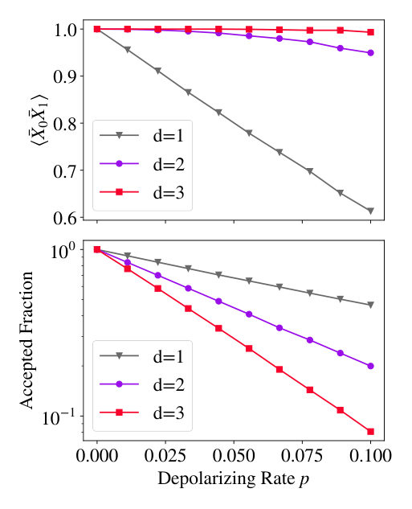
<figcaption class="paper-figure-caption"><b>Fig 5.</b> Figure 5. Demonstration of improved accuracy in error- detected expectation values for physics-informed codes. Here we start from the symmetries (46) of an n = 6 Fermi-Hubbard Hamiltonian and extend to distance d = 2 and d = 3 codes. (top) Expectation value of the logical observable ¯ X0 ¯ X1 in a logical Bell state vs. depolarizing noise rate p. Without noise, this expectation value should be one. Here, logical state preparation is assumed to be done fault-tolerantly, and depolarizing noise acts on physical qubits after each logical operation. As can be seen, extending the codes to higher distances significantly improves the accuracy of the expecta- tion value. As discussed in the main...</figcaption>
</figure>
</div>

<p><strong>Summary.</strong> This paper introduces a powerful, general framework for designing quantum error correction codes by reformulating the design problem as a Boolean Satisfiability (SAT) problem. By using state-of-the-art SAT solvers, the authors can computationally discover codes that respect specific physical symmetries or are tailored to realistic hardware noise profiles. This advances the practical feasibility of building fault-tolerant quantum computers.</p>
<p><strong>Why it may be interesting.</strong> This is highly relevant as it provides a computational, systematic methodology for designing robust quantum hardware components (QEC codes) by mapping a complex physical problem onto a well-studied computational problem (SAT).</p>
<details>
<summary>Detailed structure</summary>
<p><strong>Main problem.</strong> The paper addresses the challenge of designing quantum error correction (QEC) codes, which is currently done manually without considering specific physical or hardware constraints.</p>
<p><strong>Main result.</strong> They developed a general framework that formulates code design as a Boolean Satisfiability (SAT) problem, successfully designing novel, hardware-aware codes with lower error rates than state-of-the-art surface codes.</p>
<p><strong>Method.</strong> The core method involves translating the code design problem (including constraints from physics or noise models) into a SAT problem and leveraging state-of-the-art SAT solvers to find solutions.</p>
<p><strong>Model / system.</strong> The work focuses on quantum stabilizer codes, which are used to protect quantum information. The framework is general enough to incorporate physics-inspired symmetries, such as those derived from the Fermi-Hubbard model, and detailed noise models.</p>
<p><strong>Key observables.</strong> Logical error rate, satisfiability probability (PSAT), and the ability to encode up to 100 physical qubits.</p>
<p><strong>Important parameters / regimes.</strong> Code parameters $[[n, k, d]]$, code-design density $m/(n-k)$, and the number of physical qubits ($n$).</p>
<p><strong>Assumptions / limitations.</strong> The general problem is proven to be NP-complete, meaning an efficient algorithm for all cases is unlikely, and the approach relies on the practical effectiveness of modern SAT solvers.</p>
<p><strong>Figures summary.</strong> Figures illustrate the code design framework overview, the phase transition in satisfiability probability vs. error parameter, and comparisons showing reduced logical error rates for novel codes under biased noise.</p>
<p><strong>Paper structure.</strong> The paper introduces the framework, proves the NP-completeness of the problem, details the SAT formulation for code discovery and extension, and validates the method by applying it to physics-inspired and hardware-aware noise models.</p>
</details>
<details>
<summary>Abstract</summary>
<p>Although quantum error correction is widely believed to be necessary for impactful applications of quantum computers, the design of quantum error correction codes is largely done by hand, without respect to problem or hardware constraints. In this work, we present a highly general and flexible framework for the computational design of both physics-inspired and hardware-aware quantum codes. To do so, we formulate code design as a Boolean satisfiability (SAT) problem and show how to incorporate all required error correction criteria. We prove that code design is NP-complete, ruling out any efficient algorithm for designing codes in general. Nonetheless, we show that state-of-the-art SAT solvers are able to effectively find solutions for many practical problems. Notably, we are able to design physics-inspired codes with up to 100 physical qubits in minutes, and we design new hardware-aware codes for biased noise which have a lower logical error rate than state-of-the-art surface codes.</p>
</details>
<p><sub><a href="#top">↑ back to top</a></sub></p>

<p><a id="paper-2608.22656"></a></p>
<h3 id="sharp-state-independent-uncertainty-relations-for-multipartite-systems"><a href="http://arxiv.org/abs/2608.22656v1">Sharp State-Independent Uncertainty Relations for Multipartite systems</a></h3>
<p><strong>Authors:</strong> Yiling Wang, Naihuan Jing<br>
<strong>Type:</strong> theory · <strong>Category:</strong> other · <strong>PDF:</strong> <a href="https://arxiv.org/pdf/2608.22656v1">https://arxiv.org/pdf/2608.22656v1</a><br>
<strong>Analysis basis:</strong> full PDF text, analyzed in chunks
<strong>Topic relevance:</strong> <code>analog quantum simulation</code> <strong>1/5</strong></p>
<div class="figure-strip-hint">↔ Scroll figures horizontally</div>
<div class="paper-figures-scroll">
<figure class="paper-figure-card">
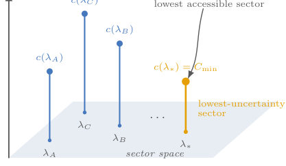
<figcaption class="paper-figure-caption"><b>Fig 1.</b> FIG. 2. Sector-resolved uncertainty landscape for a reducible representation. Each irreducible sector λ is represented by a point in the sector space, while the vertical direction gives its uncertainty level c(λ) = 2⟨λ, δ⟩. The lowest accessible sector λ∗determines the sharp state-independent uncertainty floor Cmin = c(λ∗).</figcaption>
</figure>
<figure class="paper-figure-card">
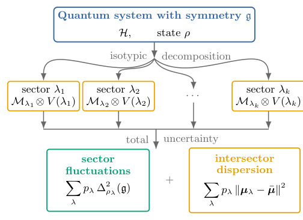
<figcaption class="paper-figure-caption"><b>Fig 2.</b> FIG. 1. Symmetry-resolved structure of collective uncer- tainty. After isotypic decomposition, the total variance sepa- rates exactly into intrinsic quantum fluctuations and nonneg- ative dispersion between sectors.</figcaption>
</figure>
</div>

<p><strong>Summary.</strong> This paper develops a general theoretical framework to find state-independent uncertainty relations for complex multipartite quantum systems governed by a symmetry algebra. By decomposing the total variance using representation theory, the authors show that the minimum unavoidable uncertainty is dictated entirely by the system's underlying symmetry structure. This provides a powerful, symmetry-based constraint on quantum fluctuations.</p>
<p><strong>Why it may be interesting.</strong> This work provides a powerful, general mathematical tool derived from representation theory to constrain quantum fluctuations in complex, interacting many-body systems, offering insights beyond simple pairwise correlations.</p>
<details>
<summary>Detailed structure</summary>
<p><strong>Main problem.</strong> The paper addresses the challenge of determining state-independent uncertainty relations for multipartite quantum systems whose symmetry representation is reducible.</p>
<p><strong>Main result.</strong> It establishes a general framework showing that the minimum total uncertainty is determined solely by the intrinsic symmetry structure, specifically by the lowest accessible irreducible symmetry sector.</p>
<p><strong>Method.</strong> The authors employ representation theory, utilizing the isotypic decomposition of the system's Hilbert space to decompose the total variance into intrinsic sector fluctuations and intersector dispersion.</p>
<p><strong>Model / system.</strong> The analysis is applied to multipartite quantum systems whose collective observables are generated by a compact semisimple Lie algebra (like $su(2)$ for spin systems). The system's state space is treated as a reducible tensor-product representation.</p>
<p><strong>Key observables.</strong> Total generator variance ($\Delta^2_
ho(g)$), intrinsic sector uncertainty ($c(\lambda) = 2\langle\lambda, \delta
angle$), and the sector weights ($p_\lambda$).</p>
<p><strong>Important parameters / regimes.</strong> The symmetry algebra $\mathfrak g$, the set of highest weights $\Lambda(\mathcal{H})$, and the Weyl vector $\delta$.</p>
<p><strong>Assumptions / limitations.</strong> The analysis relies on the existence of a compact semisimple Lie algebra and the validity of the isotypic decomposition theorem.</p>
<p><strong>Figures summary.</strong> Figures illustrate the symmetry-resolved structure of uncertainty, showing the exact separation into intrinsic fluctuations and intersector dispersion, and demonstrating how the lowest accessible sector sets the sharp uncertainty floor.</p>
<p><strong>Paper structure.</strong> The paper builds from the general problem of state-independent uncertainty to deriving an exact variance decomposition based on symmetry sectors. It then derives the sharp lower bound by minimizing over the accessible sectors, confirming results for spin-1/2 and spin-1 systems.</p>
</details>
<details>
<summary>Abstract</summary>
<p>Uncertainty relations constrain the fluctuations of incompatible observables, but most familiar bounds depend on the quantum state. State-independent uncertainty relations instead ask how much fluctuation remains unavoidable for every quantum state. For observables generated by a continuous symmetry, sharp state-independent bounds are known when the symmetry representation is irreducible. Multipartite collective systems, however, generally appear as reducible tensor-product representations of a symmetry algebra, which raises the question of how to determine their total uncertainty.   We resolve this problem for multipartite quantum systems with a compact semisimple symmetry algebra $\mathfrak g$. Exploiting the symmetry structure, we formulate a general framework for state-independent uncertainty based on representation theory. The total variance admits an exact decomposition into intrinsic fluctuations within irreducible sectors and a nonnegative dispersion between sectors. This yields the sharp state-independent bound for the total variance $Δ_ρ^2(\mathfrak g)$ on the multipartite Hilbert space $\mathcal H$ \[ \min_ρΔ_ρ^2(\mathfrak g) = \min_{λ\inΛ(\mathcal H)} 2\langleλ,δ\rangle, \] where $ρ$ is any density operator on $\mathcal H$, $Λ(\mathcal H)$ is the set of highest weights $λ$ labeling those sectors, and $δ$ is the Weyl vector. This demonstrates that the ultimate uncertainty is completely controlled by its intrinsic symmetry structure. As a special example, this result confirms our previous conjecture that the total uncertainty floor of collective spin-$1/2$ systems depends only on the parity of the particle number. We further illustrate the framework for multipartite spin-$1$ systems, demonstrating that the same symmetry-sector mechanism persists beyond spin-$1/2$.</p>
</details>
<p><sub><a href="#top">↑ back to top</a></sub></p>
<h2 id="other-papers-25">Other papers (25)</h2>
<p><em>Papers from primary archives without highlighted authors or any topic match. Click to expand.</em></p>
<details>
<summary>Show other papers</summary>

<p><a id="paper-2608.23379"></a></p>
<h3 id="a-dqmc-study-of-the-spectral-and-conductive-properties-of-the-two-dimensional-holstein-model"><a href="http://arxiv.org/abs/2608.23379v1">A DQMC study of the spectral and conductive properties of the two-dimensional Holstein model</a></h3>
<p><strong>Authors:</strong> J. Neuhaus, B. Cohen-Stead, N. Mannella, S. Johnston<br>
<strong>Type:</strong> theory · <strong>Category:</strong> strongly correlated electrons · <strong>PDF:</strong> <a href="https://arxiv.org/pdf/2608.23379v1">https://arxiv.org/pdf/2608.23379v1</a><br>
<strong>Analysis basis:</strong> full PDF text, analyzed in chunks</p>
<div class="figure-strip-hint">↔ Scroll figures horizontally</div>
<div class="paper-figures-scroll">
<figure class="paper-figure-card">
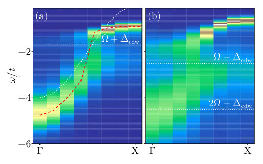
<figcaption class="paper-figure-caption"><b>Fig 1.</b> FIG. 2. Examples of the Engelsberg-Schrieffer band kinks. (a) Results along the Γ −X for λ = 0.3, Ω/t = 1, βt = 20, and ⟨n⟩= 1.0. The dotted white line plots the noninteracting dispersion. The dashed red line is the observed kinked dis- persion. (b) Results along the Γ −X for λ = 0.3, Ω/t = 2, βt = 20, and ⟨n⟩= 1.0 plotted on a square root scale to high- light the spectral weight deeper in the band.</figcaption>
</figure>
<figure class="paper-figure-card">
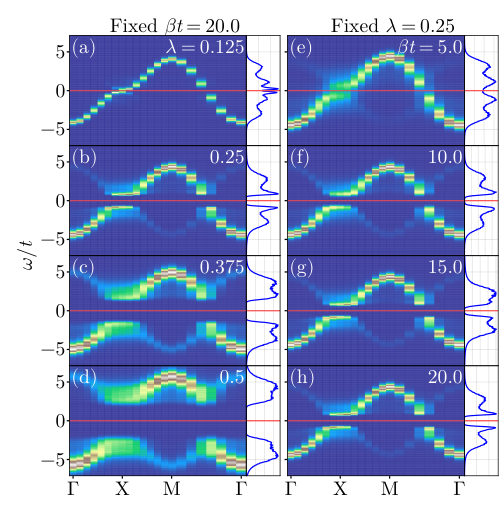
<figcaption class="paper-figure-caption"><b>Fig 2.</b> FIG. 1. Single-particle spectral functions A(k, ω) for the half- filled (⟨n⟩= 1) Holstein model with Ω/t = 0.5. Panels (a)-(d) show results for fixed βt = 20 and select λ values. Panels (e)-(h) show results for fixed λ = 0.25 and select inverse tem- peratures β. The panels to the right of each spectral function show the density of states N(ω).</figcaption>
</figure>
<figure class="paper-figure-card">
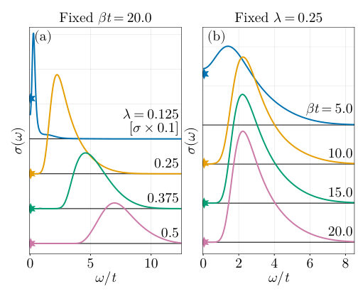
<figcaption class="paper-figure-caption"><b>Fig 3.</b> FIG. 3. Optical conductivity for the half-filled (⟨n⟩= 1) Holstein model with Ω/t = 0.5. The star markers placed at ω/t = 0 are the dc conductivity values obtained using the imaginary time proxy σdc defined in Eq. (11). Panel (a) shows results for fixed inverse temperatures βt = 20 and select λ, while panel (b) shows results for fixed λ = 0.25 and select β.</figcaption>
</figure>
<figure class="paper-figure-card">
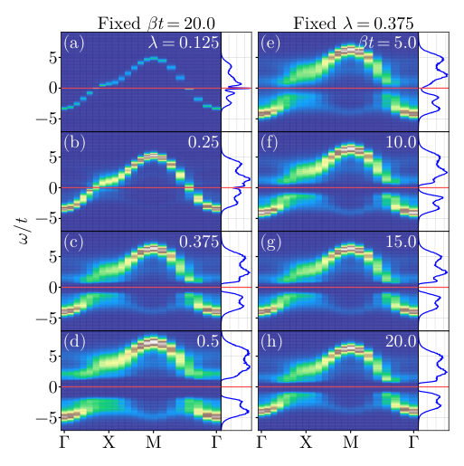
<figcaption class="paper-figure-caption"><b>Fig 4.</b> FIG. 4. Single-particle spectral functions for Holstein model at ⟨n⟩= 0.7 and Ω/t = 0.5. Panels (a)-(d) show results for fixed βt = 20 and select λ values, while panels (e)-(h) show results for λ = 0.375 and select inverse temperatures β. The panels to the right of each spectral function show the density of states N(ω).</figcaption>
</figure>
<figure class="paper-figure-card">
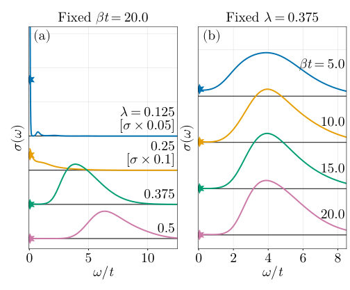
<figcaption class="paper-figure-caption"><b>Fig 5.</b> FIG. 5. Optical conductivity for the doped Holstein model with ⟨n⟩= 0.7 and Ω/t = 0.5. The star markers at ω/t = 0 are the value of dc conductivity obtained using the imaginary axis proxy σdc given by Eq. (11). Panel (a) shows results for fixed inverse temperatures βt = 20 and select λ while panel (b) shows results for fixed λ = 0.375 and select β.</figcaption>
</figure>
</div>
<p><strong>Summary.</strong> This paper uses advanced Determinant Quantum Monte Carlo simulations to study the two-dimensional Holstein model. It maps the system's behavior as doping changes, revealing transitions between metallic, polaron liquid, and charge-density-wave insulating phases. The work provides detailed spectral and conductive signatures of these correlated electronic states.</p>
<p><strong>Why it may be interesting.</strong> The study provides detailed, unbiased numerical results for a canonical model (Holstein) that captures the interplay between electronic correlations and lattice degrees of freedom, which is central to understanding high-Tc superconductivity and polaronic physics.</p>
<details>
<summary>Detailed structure</summary>
<p><strong>Main problem.</strong> The study investigates the dynamical properties of the two-dimensional Holstein model, specifically mapping the phase evolution as carrier concentration is tuned.</p>
<p><strong>Main result.</strong> The analysis characterizes transitions from a dressed metallic phase through (bi)polaron liquid/insulator states to a charge-density-wave (CDW) insulator.</p>
<p><strong>Method.</strong> The research employs numerically exact Determinant Quantum Monte Carlo (DQMC) simulations, requiring advanced analytic continuation techniques (DEAC/MaxEnt) to extract real-frequency observables.</p>
<p><strong>Model / system.</strong> The system is the two-dimensional square lattice Holstein Hamiltonian, which describes the coupling between itinerant electrons and lattice phonons. The Hamiltonian includes terms for hopping, electron-phonon coupling, and lattice dynamics.</p>
<p><strong>Key observables.</strong> Single-particle spectral function A(k, omega), optical conductivity sigma(omega), and charge/spin structure factors Sc(Q) and Ss(q).</p>
<p><strong>Important parameters / regimes.</strong> Phonon energies, electron-phonon coupling strengths, carrier concentrations (doping), and temperature, studied across over 16,640 parameter values.</p>
<p><strong>Assumptions / limitations.</strong> The use of DQMC is numerically exact but relies on complex analytic continuation methods (DEAC/MaxEnt) to bridge imaginary-time simulation data to real-frequency spectra.</p>
<p><strong>Figures summary.</strong> The figures likely show the evolution of spectral weight, the opening of gaps in the spectral function, and the suppression of the Drude response in the optical conductivity as CDW order sets in.</p>
<p><strong>Paper structure.</strong> The paper systematically analyzes the model across various parameter regimes, first establishing the theoretical framework using DQMC, then calculating key observables like the spectral function and conductivity, and finally mapping the phase diagram based on doping and coupling strength.</p>
</details>
<details>
<summary>Abstract</summary>
<p>We study the dynamical properties of the two-dimensional square lattice Holstein Hamiltonian using numerically exact determinant quantum Monte Carlo simulations. In particular, we report systematic calculations of the model's single-particle spectral function and optical conductivity over a range of phonon energies, electron-phonon coupling strengths, carrier concentrations, and temperatures. In doing so, we map the evolution of the system from a dressed metallic phase to a (bi)polaron liquid/insulator to a charge-density-wave insulator as the carrier concentration is tuned from dilute values to half-filling. We corroborate these results using several equal-time correlation measurements and related proxy quantities reconstructed from time-displaced correlation measurements. This paper is also accompanied by an extensive open data set, covering over 16,640 unique parameter values.</p>
</details>
<p><sub><a href="#top">↑ back to top</a></sub></p>

<p><a id="paper-2608.22464"></a></p>
<h3 id="a-test-drive-for-exchange-correlation-functionals-on-noncollinear-magnets-mnmath977mathir-mnmath978mathge-nismath979math-and-ymnomath980math"><a href="http://arxiv.org/abs/2608.22464v1">A test drive for exchange-correlation functionals on noncollinear magnets: Mn$_3$Ir, Mn$_3$Ge, NiS$_2$, and YMnO$_3$</a></h3>
<p><strong>Authors:</strong> Marie-Therese Huebsch, Martijn Marsman, Jacques K. Desmarais, Stefano Pittalis, Fabien Tran<br>
<strong>Type:</strong> theory · <strong>Category:</strong> strongly correlated electrons · <strong>PDF:</strong> <a href="https://arxiv.org/pdf/2608.22464v1">https://arxiv.org/pdf/2608.22464v1</a><br>
<strong>Analysis basis:</strong> full PDF text, analyzed in chunks</p>
<div class="figure-strip-hint">↔ Scroll figures horizontally</div>
<div class="paper-figures-scroll">
<figure class="paper-figure-card">
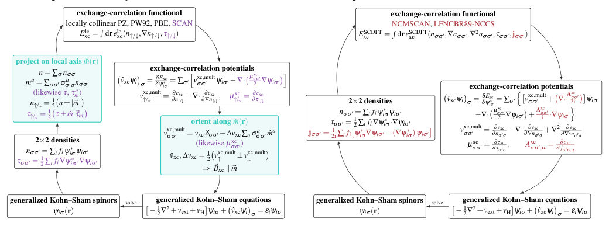
<figcaption class="paper-figure-caption"><b>Fig 1.</b> FIG. 1. Self-consistency cycle of (a) spin-DFT in the locally collinear approximation and (b) spin-current DFT. Starting from the generalized Kohn–Sham (GKS) spinors ψiσ, the 2×2 densities are computed, the exchange-correlation (XC) energy is evaluated, and its variation with respect to ψ∗ iσ yields the XC potentials entering the GKS equations. Turquoise boxes mark the two steps exclusive to the locally collinear treatment: the projection of the densities onto the local spin-quantization axis ˆm = ⃗m/|⃗m| before the XC functional is evaluated, and the orientation of the resulting spin-diagonal potential along ˆm, which enforces zero XC torque. Purple denotes quantities specific to MGGA...</figcaption>
</figure>
<figure class="paper-figure-card">
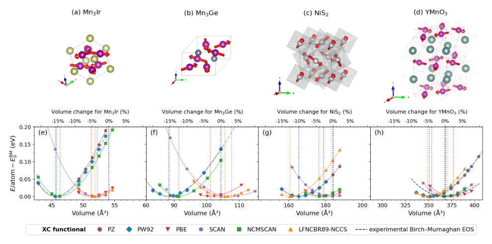
<figcaption class="paper-figure-caption"><b>Fig 2.</b> FIG. 2. Structure, magnetic order, and equations of state of the four benchmark materials. (a)-(d) Conventional cells of Mn3Ir, Mn3Ge, NiS2, and YMnO3 with the experimentally determined magnetic configurations (red arrows) of MAGNDATA entries, cf. Table II. (e)-(h) Energy per atom, relative to the minimum EBM 0 of the respective Birch–Murnaghan (BM) fit, as a function of the cell volume for the six XC functionals. The cells are scaled isotropically, with the internal coordinates and (for the hexagonal systems) the c/a ratio fixed to the experimental structure. Symbols are computed total energies; the curves are the BM fits, drawn dashed for PW92 where it nearly coincides with PZ. Colored...</figcaption>
</figure>
<figure class="paper-figure-card">
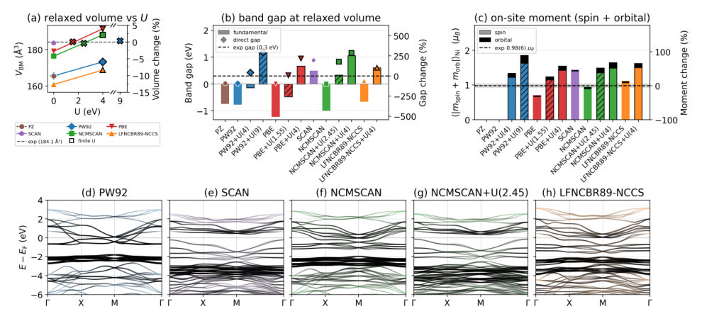
<figcaption class="paper-figure-caption"><b>Fig 3.</b> FIG. 3. Structural, electronic, and magnetic properties of NiS2 depending on the exchange-correlation (XC) functional and on-site Coulomb interaction U. (a) Equilibrium volume VBM from the Birch–Murnaghan fits as a function of the on-site U applied to the Ni-3d shell: all functionals atU = 0; PW92, PBE, NCMSCAN, and LFNCBR89-NCCS at U = 4 eV (black-outlined markers); and NCMSCAN atU = 2.45 eV (cross), the value chosen such that VBM matches the experimental low-temperature volume of 184.1 Å3 (2 K, Ref. 114; dashed line). The right axis gives the volume change relative to this reference. (b) Fundamental (bars) and smallest direct (markers) band gap at each XC functional’s VBM. Negative values...</figcaption>
</figure>
<figure class="paper-figure-card">
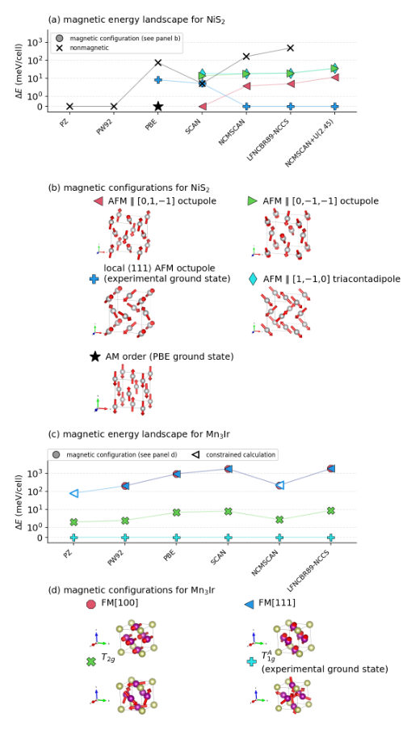
<figcaption class="paper-figure-caption"><b>Fig 4.</b> FIG. 4. Relaxed-volume magnetic energy landscapes and candidate configurations for NiS2 [(a),(b)] and Mn3Ir [(c),(d)]. In the land- scape panels (a),(c), ∆E per cell is shown relative to each functional’s ground state on a logarithmic scale. The colored markers are the magnetic configurations rendered in panels (b),(d), black × marks the nonmagnetic solution, and open ◁denotes constrained calcula- tions (also shown in Fig. 5(b) at θ = 90◦). The black star in (a) is the collinear altermagnetic (AM) order that the PBE ground state converges to. Panels (b),(d) show the corresponding magnetic con- figurations, with the antiferromagnetic (AFM) experimental ground states highlighted.</figcaption>
</figure>
<figure class="paper-figure-card">
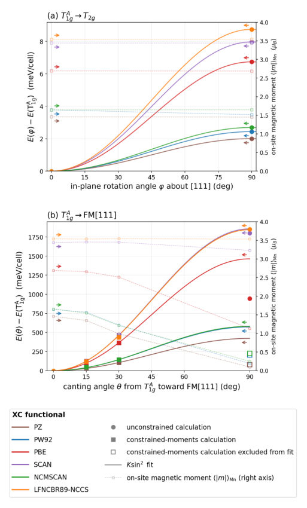
<figcaption class="paper-figure-caption"><b>Fig 5.</b> FIG. 5. Magnetic anisotropy of Mn3Ir along two paths out of the T A 1g ground state resolved by XC functional (colors). (a) In-plane ro- tation by an angle ϕ about the [111] axis, connecting T A 1g (ϕ = 0) to T2g (ϕ = 90◦): the energy difference E(ϕ)−E(T A 1g) per cell (left axis) follows a Keff sin2 ϕ law (solid lines). (b) Canting by an an- gle θ from T A 1g toward FM[111], evaluated with constrained-moment calculations (squares) and fitted by KFM sin2 θ (using filled squares; omitting open markers). In both panels, dashed curves with open squares give the on-site Mn moment ⟨|m|⟩Mn read on the right axis.</figcaption>
</figure>
</div>
<p><strong>Summary.</strong> This paper tests advanced theoretical methods for calculating the electronic structure of noncollinear magnets using first-principles DFT. By comparing Spin-Current DFT (SCDFT) against simpler Spin-DFT approaches, the authors demonstrate that SCDFT is necessary to accurately capture the complex spin textures observed in materials like $ ext{NiS}_2$. The findings establish SCDFT as a powerful, albeit complex, tool for modern magnetism research.</p>
<p><strong>Why it may be interesting.</strong> This work is highly relevant as it pushes the boundaries of electronic structure theory for magnetic materials, providing advanced computational tools (SCDFT) necessary for modeling complex, non-collinear magnetic ordering that is central to modern condensed matter physics.</p>
<details>
<summary>Detailed structure</summary>
<p><strong>Main problem.</strong> The primary challenge is developing and rigorously testing exchange-correlation (XC) approximations for describing noncollinear magnetism, as genuinely noncollinear approximations are largely untested in practice.</p>
<p><strong>Main result.</strong> The study finds that only Spin-Current DFT (SCDFT) functionals successfully recover the spin texture of the experimental ground state for $    ext{NiS}_2$, demonstrating SCDFT's utility in capturing noncollinear physics.</p>
<p><strong>Method.</strong> The authors employed first-principles calculations using the Vienna ab initio simulation package (VASP), comparing two SCDFT functionals ($ ext{NCMSCAN}$ and $ ext{LFNCBR89-NCCS}$) against locally collinear extensions of standard functionals ($   ext{PZ}$, $ ext{PW}92$, $   ext{PBE}$, $    ext{SCAN}$).</p>
<p><strong>Model / system.</strong> The research focuses on four noncollinear $d$-electron antiferromagnetic magnets: $ ext{Mn}_3   ext{Ir}$, $ ext{Mn}_3   ext{Ge}$, $ ext{NiS}_2$, and $  ext{YMnO}_3$. The theoretical framework involves solving the Generalized Kohn–Sham (GKS) equations incorporating spin-current density dependence.</p>
<p><strong>Key observables.</strong> Equilibrium lattice constants, electronic band gaps, on-site magnetic moments ($\mu_x, \mu_y, \mu_z$), and the recovery of the experimental spin texture.</p>
<p><strong>Important parameters / regimes.</strong> The theoretical constraint of $ ext{U}(1)   imes    ext{SU}(2)$ gauge invariance is crucial for the SCDFT functionals.</p>
<p><strong>Assumptions / limitations.</strong> The comparison highlights that while SCDFT captures noncollinear physics, the tested functionals do not uniformly reproduce all experimental observables with higher accuracy than their locally collinear counterparts.</p>
<p><strong>Figures summary.</strong> Figure 1 contrasts the local collinear (SDFT) and noncollinear (SCDFT) calculation frameworks. Table VII compares the computational costs (SCF steps and time) of various functionals across the tested materials.</p>
<p><strong>Paper structure.</strong> The paper systematically develops the theoretical framework, contrasting the restrictive local projection of Spin-DFT with the gauge-invariant approach of Spin-Current DFT. It then applies this framework to calculate and compare structural, electronic, and magnetic properties for the four target materials.</p>
</details>
<details>
<summary>Abstract</summary>
<p>A first-principles description of noncollinear magnets is challenging, and the practical behavior of genuinely noncollinear exchange-correlation approximations is largely untested. Spin-current density-functional theory (SCDFT) admits noncollinear approximations constrained by local U(1)$\times$SU(2) gauge invariance, an exact condition unavailable in the more restrictive framework of spin-DFT (SDFT). Using the Vienna ab initio simulation package (VASP), we compare two recently developed noncollinear SCDFT functionals, NCMSCAN and LFNCBR89-NCCS, against locally collinear SDFT extensions of four common functionals (PZ, PW92, PBE, and SCAN) for several noncollinear $d$-electron systems. The key finding is that among all tested functionals, only the SCDFT functionals recover the spin texture of the experimental ground state of NiS$_2$, and they do so at a cost comparable to standard semi-local approximations. Yet the two SCDFT functionals differ in equilibrium volumes, band gaps, and on-site magnetic moments. Overall, this survey illustrates the usefulness of SCDFT in capturing noncollinear physics with the tested approximations.</p>
</details>
<p><sub><a href="#top">↑ back to top</a></sub></p>

<p><a id="paper-2608.22801"></a></p>
<h3 id="an-exactness-barrier-for-zx-calculus-optimization-of-synthesized-cliffordt-circuits"><a href="http://arxiv.org/abs/2608.22801v1">An Exactness Barrier for ZX-Calculus Optimization of Synthesized Clifford+T Circuits</a></h3>
<p><strong>Authors:</strong> Chon-Fai Kam, Anuradha Mahasinghe, Kaushika De Silva, Frédéric Cadet, Jingbo Wang<br>
<strong>Type:</strong> theory · <strong>Category:</strong> quantum information and computing · <strong>PDF:</strong> <a href="https://arxiv.org/pdf/2608.22801v1">https://arxiv.org/pdf/2608.22801v1</a><br>
<strong>Analysis basis:</strong> full PDF text, analyzed in chunks</p>
<div class="figure-strip-hint">↔ Scroll figures horizontally</div>
<div class="paper-figures-scroll">
<figure class="paper-figure-card">
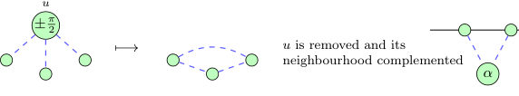
<figcaption class="paper-figure-caption"><b>Fig 1.</b> FIG. 1. The rewriting rules used in this paper, stratified into the three tiers whose separate contributions our results isolate. Green circles are Z spiders carrying a phase, yellow boxes are Hadamard gates, solid lines are wires, and dashed blue lines are Hadamard edges. (a) A Clifford+T word becomes a chain of phase spiders and Hadamard boxes, with Zm the spider of phase mπ/4. (b) Tier 1 is the purely local layer: two adjacent same-colour spiders fuse by adding phases, and a zero-phase spider of degree two is an identity and is deleted. Section III shows that these two rules compute exactly the normal form of Z2 ∗Z8. (c) Tier 2 adds the graph operations, local complementation at a ±π/2...</figcaption>
</figure>
<figure class="paper-figure-card">
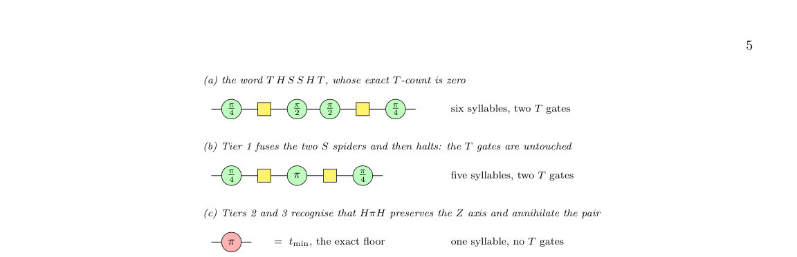
<figcaption class="paper-figure-caption"><b>Fig 2.</b> FIG. 2. What each tier can and cannot do, shown on a single word. (a) The word T H S S H T implements a Clifford, so its minimal T-count is zero, but nothing about the syllable string reveals this. (b) Tier 1 sees only adjacent syllables of the same colour. It fuses S with S into a π spider and then has no further move, leaving both T gates in place: local rewriting alone certifies nothing about the T-count. (c) The interior Clifford HSSH equals X, which preserves the Z axis up to sign, so the two T phases can be brought together and cancel. Recognising this is exactly what the global strategies of Tiers 2 and 3 supply, and Sec. VI shows that at one qubit they supply neither more nor less:...</figcaption>
</figure>
<figure class="paper-figure-card">
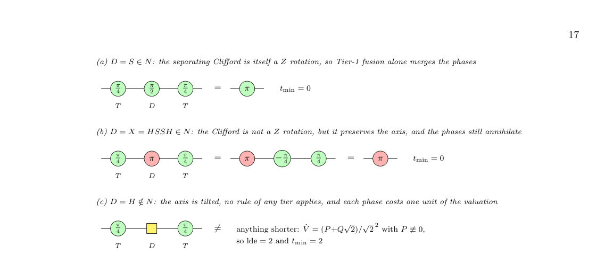
<figcaption class="paper-figure-caption"><b>Fig 3.</b> FIG. 3. The normalizer condition of Lemma 7, illustrated on the shortest nontrivial words. In each row two T phases are separated by a single Clifford D. (a) When D is a Z rotation the three spiders are all green and Tier-1 fusion merges them outright, leaving a Clifford. (b) When D = X, which is HSSH and therefore not visibly a Z rotation at all, the phases still merge: X preserves the Z axis up to sign, so pushing the red π spider through the second phase negates it, the two green spiders fuse to zero, and both T gates disappear. Membership in N, not syntactic appearance, is what decides the outcome. (c) When D = H the axis is tilted, the two phases sit on genuinely different rotation...</figcaption>
</figure>
<figure class="paper-figure-card">
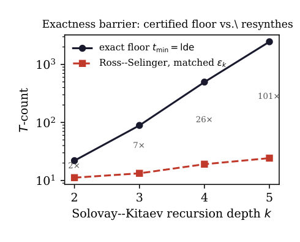
<figcaption class="paper-figure-caption"><b>Fig 4.</b> FIG. 4. The exactness barrier separates the certified exact floor from approximation-aware resynthesis at matched accu- racy, with a geometrically growing gap (Theorem 3).</figcaption>
</figure>
<figure class="paper-figure-card">
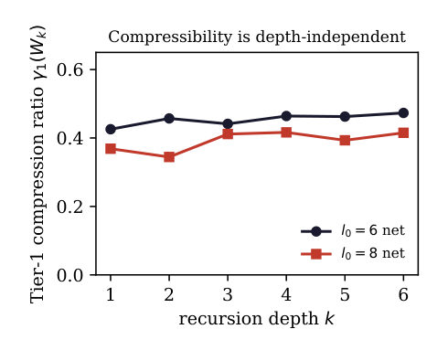
<figcaption class="paper-figure-caption"><b>Fig 5.</b> FIG. 5. Tier-1 compression ratio is depth-independent on both nets, confirming Theorem 2.</figcaption>
</figure>
</div>
<p><strong>Summary.</strong> This paper provides a unified theoretical framework to quantify the minimum number of T-gates required in a Clifford+T circuit, establishing an 'exactness barrier' using ZX-calculus. It resolves contradictions in circuit compilation by showing that both approximation-based and number-theoretic synthesis methods are fundamentally limited by this computable algebraic bound. This work is crucial for understanding the true compressibility of quantum circuits.</p>
<p><strong>Why it may be interesting.</strong> While focused on quantum computation, the rigorous mathematical machinery developed—especially the use of algebraic invariants (the barrier) to constrain physical resources (T-gates)—provides powerful theoretical tools applicable to understanding resource limitations in complex quantum systems.</p>
<details>
<summary>Detailed structure</summary>
<p><strong>Main problem.</strong> The paper addresses the discrepancy between how different methods synthesize quantum circuits and how much those circuits can be optimized using ZX-calculus rewriting.</p>
<p><strong>Main result.</strong> It establishes a single, computable 'exactness barrier' (a lower bound on T-count) that governs the optimization of Clifford+T circuits, showing that both Solovay-Kitaev and number-theoretic synthesis approaches are constrained by this bound.</p>
<p><strong>Method.</strong> The authors use advanced algebraic techniques involving ZX-calculus rewriting, exact arithmetic in Z[sqrt(2)], and rigorous proofs to derive this lower bound.</p>
<p><strong>Model / system.</strong> The focus is on Clifford+T quantum circuits, which are represented and manipulated using ZX diagrams. The optimization goal is minimizing the T-gate count.</p>
<p><strong>Key observables.</strong> T-count, the 'exactness barrier' (a lower bound on T-count), and the compression ratio achieved by ZX rewriting.</p>
<p><strong>Important parameters / regimes.</strong> Recursion depth (e.g., depth five), the denominator exponent of the synthesized ring element, and the number of qubits ($n \ge 2$).</p>
<p><strong>Assumptions / limitations.</strong> The analysis assumes that the optimization process preserves the implemented element exactly, and some results rely on calibrated ergodicity hypotheses.</p>
<p><strong>Figures summary.</strong> Figures illustrate the three tiers of ZX-calculus rewriting rules (fusion, complementation, teleportation) and show the passage from a circuit representation to a graph-like form and finally to a generalized flow.</p>
<p><strong>Paper structure.</strong> The paper builds the argument by first analyzing local simplification (Tier 1, free-product reduction), then establishing the general exactness barrier (Theorem 3), and finally proving the saturation of this barrier for specific synthesis methods (Linkage Theorem for single-qubit words).</p>
</details>
<details>
<summary>Abstract</summary>
<p>Gate synthesis and circuit optimization are usually studied separately, and evidence on their interaction is contradictory: ZX-calculus rewriting removes a stable fraction of Solovay-Kitaev circuits, yet almost nothing from number-theoretically synthesized circuits. We show both behaviours follow from a single bound. For any optimizer that preserves the implemented element exactly--including all sound ZX rewriting with extraction--the achievable T-count is bounded below by the denominator exponent of the synthesized ring element. This exactness barrier is computable per instance and separates exact post-processing from approximation-aware resynthesis by a certified factor reaching 101x at recursion depth five. The two behaviours are then the barrier operating at different distances from the floor. For Solovay-Kitaev circuits we prove that the local ZX simplification layer (spider fusion and identity removal) computes exactly the free-product normal form of Z_2 * Z_8, giving exact per-instance compression and, under a calibrated ergodicity hypothesis, a depth-independent limit law confirmed on two independently constructed nets. For number-theoretically synthesized circuits the floor is already saturated: on single-qubit words automated ZX simplification attains it exactly, via a closed-form formula for minimal T-count in terms of phase linkage through the Z-axis normalizer. At two qubits and beyond the same valuation yields unconditional rigidity certificates, which on the quantum-Shannon-decomposition plus gridsynth pipeline certify 99.4-99.9% of the synthesized T-count as incompressible, with rigidity strengthening as accuracy tightens. This explains, and predicts the size of, the near-null optimization recently reported for that pipeline.</p>
</details>
<p><sub><a href="#top">↑ back to top</a></sub></p>

<p><a id="paper-2608.23340"></a></p>
<h3 id="anomalous-stabilization-of-excitons-by-metallic-proximity"><a href="http://arxiv.org/abs/2608.23340v1">Anomalous stabilization of excitons by metallic proximity</a></h3>
<p><strong>Authors:</strong> Jeongkeun Song, Uksam Choi, Shan Lin, Du Li, Baekjune Kang, Li Yang, Ambrose Seo, Changhee Sohn, Ho Nyung Lee<br>
<strong>Type:</strong> both · <strong>Category:</strong> strongly correlated electrons · <strong>PDF:</strong> <a href="https://arxiv.org/pdf/2608.23340v1">https://arxiv.org/pdf/2608.23340v1</a><br>
<strong>Analysis basis:</strong> full PDF text, analyzed in chunks</p>
<div class="figure-strip-hint">↔ Scroll figures horizontally</div>
<div class="paper-figures-scroll">
<figure class="paper-figure-card">
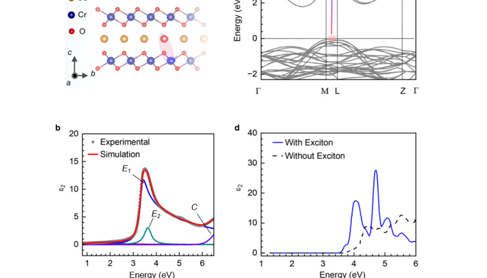
<figcaption class="paper-figure-caption"><b>Fig 1.</b> Figure 1. Interlayer excitons in delafossite CuCrO2. a. Schematic of the CuCrO2 crystal structure and interlayer exciton formation. The red and blue spheres represent the hole and electron, respectively. b. Imaginary part of the dielectric function (ε2) of CuCrO2 measured at room temperature (grey dotted line) and fitted using the Tanguy model (red line). The fit resolves two excitonic transitions, E1 and E2, associated with interlayer Cu–Cr 3d excitations, along with a higher-energy charge-transfer transition (C) from O 2p to Cr 3d states. c. Calculated electronic band structure of CuCrO2. d. Comparison of the calculated imaginary part of ε2 obtained from GW–BSE (blue line, including...</figcaption>
</figure>
<figure class="paper-figure-card">
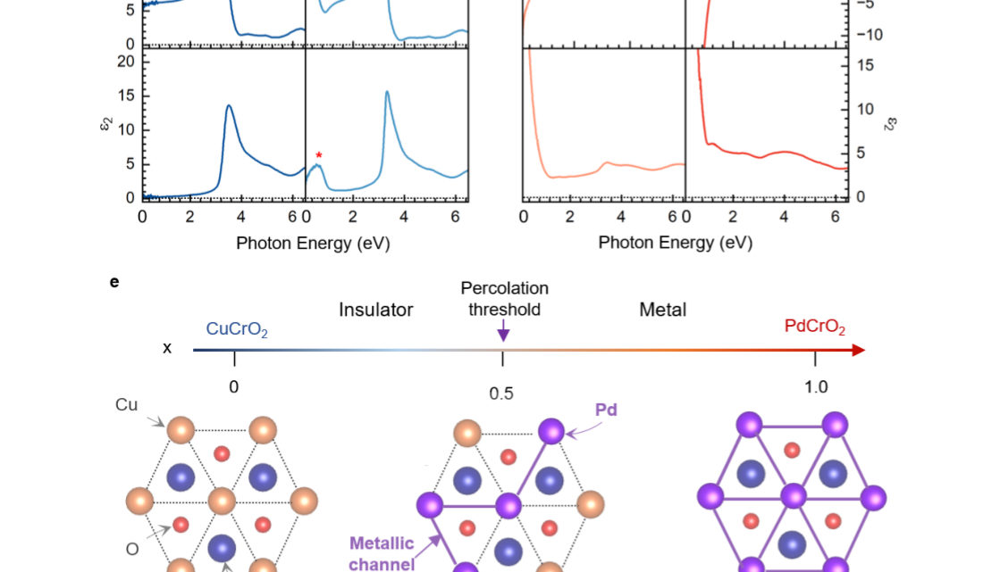
<figcaption class="paper-figure-caption"><b>Fig 2.</b> Figure 2. Percolation-driven metal–insulator transition in PdxCu1-xCrO2. a-d, Real (ε1) and imaginary (ε2) parts of the dielectric function measured at room temperature for a. x = 0.0, b. x = 0.3, c. x = 0.5, and d. x = 1.0. A broad low-energy feature (red asterisk) emerges at the intermediate composition near x = 0.3, consistent with localized plasmonic response. e. Schematic illustration of the percolation-driven metal-insulator transition. At x ≈ 0.5, corresponding to the site-percolation threshold of a triangular lattice, conductive pathways form. For x = 1.0, the system becomes the fully metallic PdCrO2.</figcaption>
</figure>
<figure class="paper-figure-card">
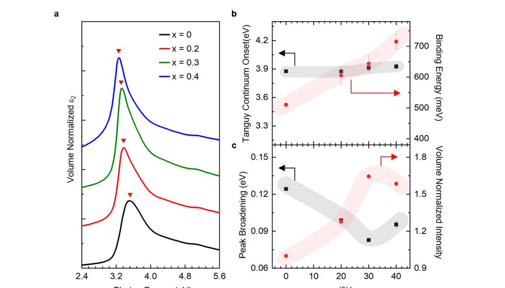
<figcaption class="paper-figure-caption"><b>Fig 3.</b> Figure 3. Exciton stabilization in pre-percolation regime. a. Volume-normalized imaginary part of the dielectric function (ε2) for x = 0.0, 0.2, 0.3, and 0.4. Red inverted triangles mark the peak positions of the excitonic resonance, showing a systematic redshift with increasing Pd concentration. b. Evolution of the optical band gap (black squares) and exciton binding energy (Eb, red circles) extracted by fitting the Tanguy model as a function of Pd concentration (x). The binding energy increases monotonically in the pre-percolation regime. c. Excitonic linewidth (black squares) obtained by fitting the Tanguy model and the volume-normalized peak intensity (red circles) as a function of Pd...</figcaption>
</figure>
<figure class="paper-figure-card">
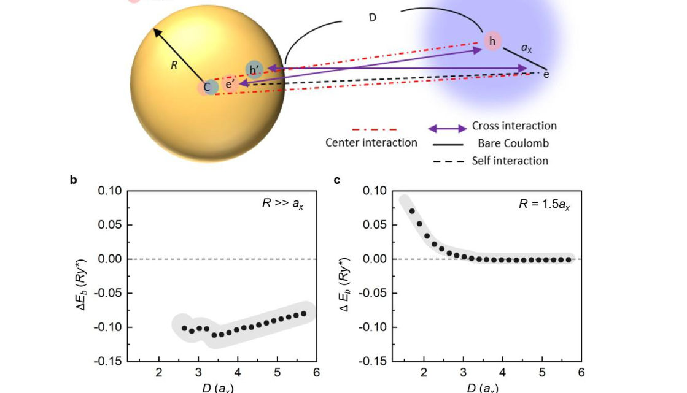
<figcaption class="paper-figure-caption"><b>Fig 4.</b> Figure 4. Image-charge mechanism for exciton stabilization. a. Schematic of a heavy-hole exciton interacting with an isolated, neutral metallic sphere of radius R. The heavy hole (h) is positioned at a surface-to-hole distance D. To satisfy the equipotential and neutrality boundary conditions, the metal induces near-surface image charges (e&#x27;, h&#x27;) and neutralizing center image charges (C). This isolated metallic sphere generates additional self-, cross-, and center- interactions that perturb the bare Coulomb potential. The exciton Bohr radius is denoted by aX. b. Calculated change in exciton binding energy (ΔEb) as a function of separation distance (D) in the macroscopic metal limit (R &gt;&gt;...</figcaption>
</figure>
</div>
<p><strong>Summary.</strong> This paper investigates how excitons behave in $   ext{Pd}<em 1-x>x   ext{Cu}</em>_2$ thin films near a metal-insulator transition. Contrary to expectations, isolated metallic patches enhance exciton binding energy via image-charge interactions before the material becomes fully metallic. This suggests that nanoscale metallic proximity can be a powerful tool for engineering excitonic properties.}   ext{CrO</p>
<p><strong>Why it may be interesting.</strong> The work provides a concrete example of how local, nanoscale electronic structure (image-charge effects) can override bulk screening predictions, offering a tunable mechanism for controlling excitonic properties in hybrid quantum materials.</p>
<details>
<summary>Detailed structure</summary>
<p><strong>Main problem.</strong> The paper investigates the anomalous stabilization of excitons in insulating materials when they are in close proximity to metallic regions, challenging the conventional view that metals always suppress excitons via dielectric screening.</p>
<p><strong>Main result.</strong> The study shows that in the pre-percolation regime, isolated metallic regions enhance electron-hole binding energy through image-charge interactions, leading to an increase in exciton binding energy before the continuous metallic network forms and causes screening.</p>
<p><strong>Method.</strong> The research combines optical spectroscopy (measuring the dielectric function) with many-body GW–BSE calculations and employs an image-charge-based theoretical model to quantify the electrostatic interactions.</p>
<p><strong>Model / system.</strong> The system studied is $ ext{Pd}<em 1-x>x   ext{Cu}</em>_2$ thin films, which undergo a percolation-driven metal-insulator transition. The theoretical model uses an image-charge perturbation Hamiltonian to describe the interaction between excitons and isolated metallic inclusions.}   ext{CrO</p>
<p><strong>Key observables.</strong> Exciton binding energy ($E_b$), redshift of the excitonic resonance peak ($E_1$), and the dielectric function ($\varepsilon_2$).</p>
<p><strong>Important parameters / regimes.</strong> Percolation threshold ($x \approx 0.5$), separation distance ($D$) relative to exciton size ($a_X$), and the Pd concentration ($x$).</p>
<p><strong>Assumptions / limitations.</strong> The analysis assumes that the system can be modeled as a heterogeneous composite, and the enhancement mechanism is dominated by local image-charge interactions when metallic regions are isolated.</p>
<p><strong>Figures summary.</strong> Figures illustrate the systematic redshift and monotonic increase in $E_b$ as Pd doping approaches the percolation threshold, contrasting this enhancement with the quenching observed once a continuous metallic network forms.</p>
<p><strong>Paper structure.</strong> The paper establishes the physical system and the problem (exciton stability vs. metal proximity). It presents experimental evidence of the percolation transition and the anomalous enhancement of $E_b$ in the pre-percolation regime. Finally, it uses an image-charge model to theoretically explain this enhancement mechanism.</p>
</details>
<details>
<summary>Abstract</summary>
<p>Metallic environments are generally expected to suppress excitons through strong dielectric screening, yet their influence can differ in composite systems where metallic and insulating regions coexist. Here, we investigate excitonic states in PdxCu1-xCrO2 thin films across a percolation-driven metal-insulator transition. Optical spectroscopy and many-body GW calculations show that CuCrO2 hosts strongly bound excitons with a binding energy of about 489 meV. With increasing Pd substitution, the system approaches an insulator-to-metal transition near x = 0.5, consistent with the site-percolation threshold of a triangular lattice. In the pre-percolation regime, the excitonic resonance redshifts by 241 meV while the Tanguy continuum onset remains nearly unchanged, consistent with a substantial increase in exciton binding energy before metallization. An image-charge-based excitonic hydrogen model shows that isolated metallic regions can enhance electron-hole binding through image-charge interactions, whereas conventional screening is recovered once a continuous metallic network forms. Although this model provides a possible interpretation of the observed excitonic evolution, an alternative scenario in which metallic and excitonic responses originate from electronically distinct states and evolve independently cannot be excluded. These results reveal unusual metallic-excitonic coexistence near a percolation-driven metal-insulator transition and suggest nanoscale metallic proximity as a possible route for modifying excitonic interactions.</p>
</details>
<p><sub><a href="#top">↑ back to top</a></sub></p>

<p><a id="paper-2608.21526"></a></p>
<h3 id="asymptotic-entanglement-in-circle-stabilizer-states-and-states-forbidding-arbitrary-vertex-minors"><a href="http://arxiv.org/abs/2608.21526v1">Asymptotic entanglement in circle stabilizer states and states forbidding arbitrary vertex-minors</a></h3>
<p><strong>Authors:</strong> Kenneth Goodenough, Marcelo Sales<br>
<strong>Type:</strong> theory · <strong>Category:</strong> quantum information and computing · <strong>PDF:</strong> <a href="https://arxiv.org/pdf/2608.21526v1">https://arxiv.org/pdf/2608.21526v1</a><br>
<strong>Analysis basis:</strong> full PDF text, analyzed in chunks</p>
<div class="figure-strip-hint">↔ Scroll figures horizontally</div>
<div class="paper-figures-scroll">
<figure class="paper-figure-card">
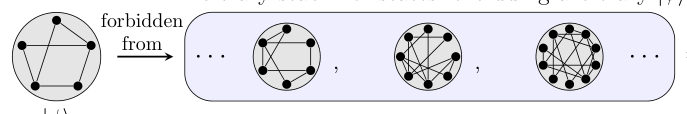
<figcaption class="paper-figure-caption"><b>Fig 1.</b> FIG. 1. Graphical description of theorem I.5. Top depicts a sequence of arbitrary stabilizer states (which we depict as graph states for convenience), bottom depicts a sequence of stabilizer states, but that do not contain some arbitrary but fixed |ϕ⟩as a vertex-minor. The asymptotic entanglement, as quantified by the distance d and locally accessible information αloc can grow strongly (see main text for more details) for the top sequence, while the entanglement in any sequence of (sufficiently strongly rank-connected) stabilizer states forbidding |ϕ⟩is necessarily constrained.</figcaption>
</figure>
<figure class="paper-figure-card">
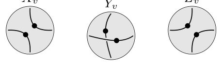
<figcaption class="paper-figure-caption"><b>Fig 2.</b> FIG. 2. The three detachments at a vertex v. The un- der/overcrossing in the Yv detachment is only present for vi- sual clarity. We have suppressed the labels of v′ and v′′.</figcaption>
</figure>
<figure class="paper-figure-card">
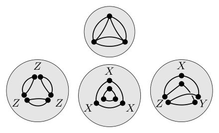
<figcaption class="paper-figure-caption"><b>Fig 3.</b> FIG. 3. A 4-regular multigraph corresponding to the 3-GHZ state in the top, and three possible detachments at the bot- tom. The bottom three multigraphs have 3, 2 and 1 con- nected components, matching the expected evaluations of r(ZZZ) = 1, r(XXX) = 2 and r(XY Z) = 3, respectively.</figcaption>
</figure>
<figure class="paper-figure-card">
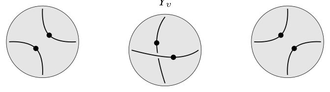
<figcaption class="paper-figure-caption"><b>Fig 4.</b> FIG. 4. The three detachments at a vertex v. The under/overcrossing in the Yv detachment is only present for visual clarity. We have suppressed the labels of v′ and v′′.</figcaption>
</figure>
<figure class="paper-figure-card">
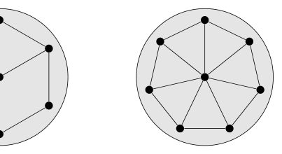
<figcaption class="paper-figure-caption"><b>Fig 5.</b> FIG. 6. The three forbidden vertex-minors for circle stabilizer states.</figcaption>
</figure>
</div>
<p><strong>Summary.</strong> This theoretical work establishes a deep link between the structural properties of quantum states (defined by forbidden vertex-minors) and their entanglement content. It proves that if a stabilizer state cannot contain a specific substructure, its entanglement is severely limited, growing only logarithmically with system size. The results are highly technical, relying on advanced concepts from matroid theory and graph theory, and are conditional on a major structural conjecture.</p>
<p><strong>Why it may be interesting.</strong> The connection between forbidden substructures (vertex-minors) and the asymptotic scaling of entanglement is a fundamental structural result that constrains the complexity of quantum states achievable in physical devices.</p>
<details>
<summary>Detailed structure</summary>
<p><strong>Main problem.</strong> The paper investigates the asymptotic entanglement properties of stabilizer states when those states are constrained by forbidding a specific substructure, known as a vertex-minor.</p>
<p><strong>Main result.</strong> Assuming a structural conjecture, the entanglement (measured by distance and locally accessible information) of such constrained states grows only logarithmically with system size, contrasting with unconstrained states.</p>
<p><strong>Method.</strong> The analysis connects entanglement measures to rank functions of multimatroids and uses graph theory (specifically 4-regular multigraphs) to establish structural bounds.</p>
<p><strong>Model / system.</strong> The system under study is the set of stabilizer states, particularly 'circle stabilizer states,' which are associated with 4-regular multigraphs. The constraints are defined via the concept of a vertex-minor.</p>
<p><strong>Key observables.</strong> Distance ($d$) and Locally Accessible Information ($\alpha_{	ext{loc}}$).</p>
<p><strong>Important parameters / regimes.</strong> System size ($n$), the fixed forbidden vertex-minor ($\vert \phi 
angle$), and the rank of graph perturbations ($p$).</p>
<p><strong>Assumptions / limitations.</strong> The primary results are conditional on Geelen’s weak structural conjecture regarding vertex-minors.</p>
<p><strong>Figures summary.</strong> Figures illustrate the contrast between entanglement in arbitrary vs. constrained stabilizer states, and show graph detachments related to rank function evaluations in 4-regular multigraphs.</p>
<p><strong>Paper structure.</strong> The paper builds from general bounds on entanglement measures (Prop I.3), connects these to multimatroid rank functions, establishes specific asymptotic bounds for circle stabilizer states (Theorems E.4, E.5), and culminates by lifting these results to general proper vertex-minor-closed families via graph perturbation theory (Theorem F.10).</p>
</details>
<details>
<summary>Abstract</summary>
<p>Stabilizer states play a central role in quantum information theory, and understanding their entanglement has motivated a large body of work. A well-studied question in particular is when a stabilizer state $|ψ\rangle$ can be transformed into another stabilizer state $|φ\rangle$ using only single-qubit Clifford operations and Pauli measurements. If this is possible, we say that $|φ\rangle$ is a vertex-minor of $|ψ\rangle$. Assuming Geelen's weak structural conjecture on vertex-minors, we establish the following general statement. For any fixed stabilizer state $|φ\rangle$, the entanglement in stabilizer states $|ψ\rangle$ that do not contain $|φ\rangle$ as a vertex-minor is asymptotically constrained. More concretely, we show that the distance of any sufficiently rank-connected $|ψ\rangle$ not containing $|φ\rangle$ as a vertex-minor grows as $O(\log n)$, and prove similar results for the so-called locally accessible information, a quantity that captures the amount of information that can be learned through single-qubit Pauli measurements. Our results rely on (i) connecting the above two entanglement measures to rank functions of multimatroids, (ii) connecting the rank functions of circle stabilizer states to rank functions on $4$-regular multigraphs, which asymptotically constrains the entanglement of circle stabilizer states, and (iii) using Geelen's weak structural conjecture on vertex-minors to `lift' the previous result to sufficiently connected states in proper vertex-minor-closed families of stabilizer states. Our results establish a connection between asymptotic stabilizer entanglement and forbidden vertex-minors, with direct implications for the entanglement that can be generated in quantum devices.</p>
</details>
<p><sub><a href="#top">↑ back to top</a></sub></p>

<p><a id="paper-2608.23303"></a></p>
<h3 id="breakdown-of-edgeworth-expansion-in-finite-blocklength-regime-and-exact-absorption-via-math1013math-deformation"><a href="http://arxiv.org/abs/2608.23303v1">Breakdown of Edgeworth Expansion in Finite-Blocklength Regime and Exact Absorption via $q$-Deformation</a></h3>
<p><strong>Authors:</strong> Hiroki Suyari<br>
<strong>Type:</strong> theory · <strong>Category:</strong> statistical mechanics · <strong>PDF:</strong> <a href="https://arxiv.org/pdf/2608.23303v1">https://arxiv.org/pdf/2608.23303v1</a><br>
<strong>Analysis basis:</strong> full PDF text, analyzed in chunks</p>
<div class="figure-strip-hint">↔ Scroll figures horizontally</div>
<div class="paper-figures-scroll">
<figure class="paper-figure-card">
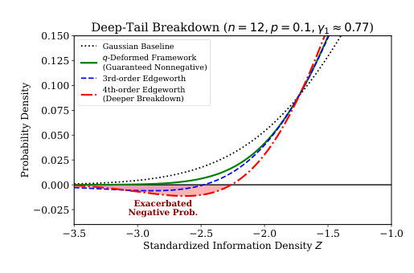
<figcaption class="paper-figure-caption"><b>Fig 1.</b> Fig. 1. Breakdown of the conventional Edgeworth expansion in the deep- tail regime for a binary memoryless source (n = 12, PX(0) = 0.1). The third-order Edgeworth PDF crosses zero around z ≃−2.45. Appending the fourth-order correction further exacerbates this unphysical negative probabil- ity. In contrast, the proposed q-deformed framework structurally preserves nonnegativity across the entire domain.</figcaption>
</figure>
<figure class="paper-figure-card">
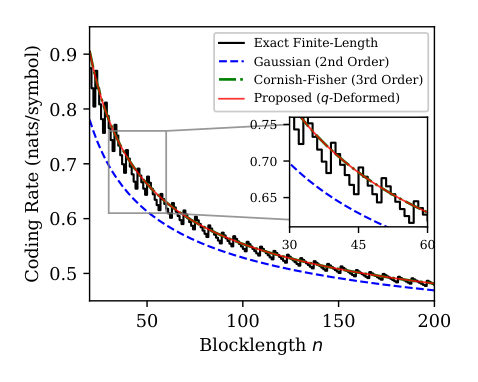
<figcaption class="paper-figure-caption"><b>Fig 2.</b> Fig. 2. Achievable finite-blocklength coding rates for the asymmetric BMS (PX(0) = 0.1, ϵ = 10−3). The proposed q-deformed bound (red solid line) mathematically coincides with the highly accurate third-order Cornish-Fisher bound (green dashed line), precisely matching the exact discrete limit. It achieves this precision while structurally guaranteeing probability nonneg- ativity, overcoming the structural limitation of polynomial approximations.</figcaption>
</figure>
<figure class="paper-figure-card">
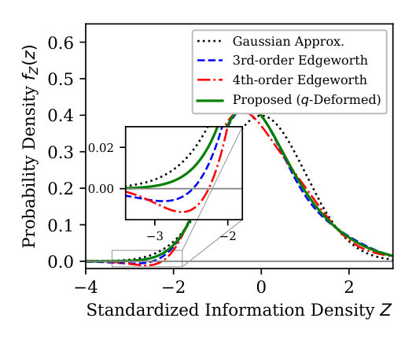
<figcaption class="paper-figure-caption"><b>Fig 3.</b> Fig. 3. Probability density functions for the asymmetric BMS (n = 12, PX(0) = 0.1). Main plot: The overall distribution. Inset: Magnified view of the deep-tail regime where the conventional Edgeworth expansions (3rd and 4th order) become unphysically negative, while the proposed q-deformed framework exactly absorbs the skewness and remains nonnegative.</figcaption>
</figure>
<figure class="paper-figure-card">
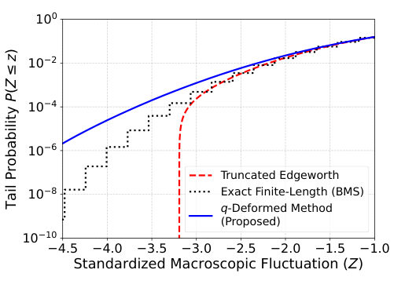
<figcaption class="paper-figure-caption"><b>Fig 4.</b> Fig. 4. Logarithmic tail probability P(Z ≤z) in the deep-tail regime for the asymmetric binary memoryless source (BMS) with n = 200 and PX(0) = 0.1. The exact limit (dotted black line) exhibits a staircase structure reflecting the discrete nature of the source. The truncated Edgeworth expansion (dashed red line) drops to zero (rendering as a vertical drop in log scale), severely underestimating the error probability. The proposed q-deformed method (solid blue line) maintains nonnegativity, providing a mathematically safe, conservative upper bound that remains operationally tight to the discrete limit.</figcaption>
</figure>
</div>
<p><strong>Summary.</strong> This paper resolves the mathematical failure of Edgeworth expansions in finite-blocklength information theory, which produce unphysical negative probabilities in the deep-tail. The authors introduce a $q$-deformed framework that structurally absorbs the finite-size skewness penalty. This method provides a robust, non-negative, and highly accurate bound for estimating operational limits in advanced communication systems.</p>
<p><strong>Why it may be interesting.</strong> While the application is in information theory, the mathematical machinery—using $q$-deformations to regularize asymptotic expansions and maintain non-negativity—is a powerful technique applicable to non-equilibrium statistical mechanics and complex systems where standard approximations fail.</p>
<details>
<summary>Detailed structure</summary>
<p><strong>Main problem.</strong> The paper addresses the structural failure of the Edgeworth expansion when estimating error probabilities in the deep-tail regime of finite-blocklength information theory, where unphysical negative probabilities arise.</p>
<p><strong>Main result.</strong> A $q$-deformed framework is proposed that resolves this inconsistency by geometrically deforming the information density space, yielding a mathematically consistent and non-negative bound.</p>
<p><strong>Method.</strong> The authors utilize a $q$-deformed statistical framework, replacing additive polynomial corrections with a geometric deformation parameterized by a dynamically scaled parameter derived from the third central moment.</p>
<p><strong>Model / system.</strong> The context is finite-blocklength information theory, analyzing the standardized fluctuation of the information density $i(X_n)$ for source coding rates, relevant to 6G and URLLC communications.</p>
<p><strong>Key observables.</strong> Standardized fluctuation $Z$, achievable source coding rates, and the probability density function $f_Z(z)$ in the deep-tail.</p>
<p><strong>Important parameters / regimes.</strong> Single-letter entropy ($H$), varentropy ($V$), third central moment ($T$), and the dynamic scaling constant $\alpha = T/(3V^2)$.</p>
<p><strong>Assumptions / limitations.</strong> The standard logarithm assumes a Gaussian measure baseline, and the $q$-deformed method provides a conservative upper bound on the error probability in the deep-tail.</p>
<p><strong>Figures summary.</strong> Figures compare the breakdown of the 3rd-order Edgeworth PDF (showing negative values) against the non-negative $q$-deformed PDF, and compare achievable rates showing the $q$-bound matching the exact discrete limit.</p>
<p><strong>Paper structure.</strong> The paper first establishes the failure of conventional asymptotic expansions (Edgeworth) in the deep-tail. It then introduces the $q$-deformed framework, proves its structural absorption of skewness via a dynamic scaling law, and finally validates this method by showing its superior mathematical consistency and matching state-of-the-art bounds.</p>
</details>
<details>
<summary>Abstract</summary>
<p>This paper addresses the structural breakdown of the Edgeworth expansion in the finite-blocklength (FBL) regime, where conventional asymptotic approximations yield unphysical negative probabilities in the deep-tail region. We propose a $q$-deformed framework that resolves this inconsistency by replacing additive polynomial perturbations with a geometric deformation of the information density space. Motivated by the linearization of nonlinear dynamics, we prove that dynamically scaling the $q$-logarithmic parameter exactly absorbs the third-order skewness while preserving global nonnegativity. We establish a universal asymptotic matching, demonstrating that the framework encapsulates higher-order asymptotic scales. Numerical results confirm that the proposed method matches the state-of-the-art precision of the Cornish-Fisher bound without the risk of negative probabilities. The framework offers a robust and computationally stable foundation for evaluating operational limits in ultra-reliable communications such as 6G and URLLC.</p>
</details>
<p><sub><a href="#top">↑ back to top</a></sub></p>

<p><a id="paper-2608.22571"></a></p>
<h3 id="characterization-of-chaotic-evolution-in-quantum-systems-induced-by-random-hermitian-matrices"><a href="http://arxiv.org/abs/2608.22571v1">Characterization of Chaotic Evolution in Quantum Systems Induced by Random Hermitian Matrices</a></h3>
<p><strong>Authors:</strong> Arkady Kurnosov, Sven Gnutzmann, Uzy Smilansky<br>
<strong>Type:</strong> theory · <strong>Category:</strong> statistical mechanics · <strong>PDF:</strong> <a href="https://arxiv.org/pdf/2608.22571v1">https://arxiv.org/pdf/2608.22571v1</a><br>
<strong>Analysis basis:</strong> full PDF text, analyzed in chunks</p>
<div class="figure-strip-hint">↔ Scroll figures horizontally</div>
<div class="paper-figures-scroll">
<figure class="paper-figure-card">
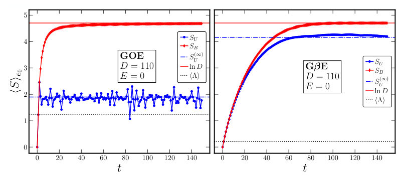
<figcaption class="paper-figure-caption"><b>Fig 1.</b> Figure 1. Entropy as a function of topological time for a single realization, averaged over all localized initial states. Left: GOE. Right: GβE with β = 1.</figcaption>
</figure>
<figure class="paper-figure-card">
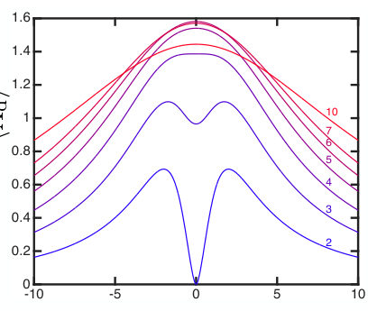
<figcaption class="paper-figure-caption"><b>Fig 2.</b> Figure 2. Mean LE of the d-regular graph as a function of λ = E/ξ, see Eq. (22), for different values of d. The dependence on the graph connectivity is non-monotonic, with the maximum of ⟨Λd⟩attained at d = 6.</figcaption>
</figure>
<figure class="paper-figure-card">
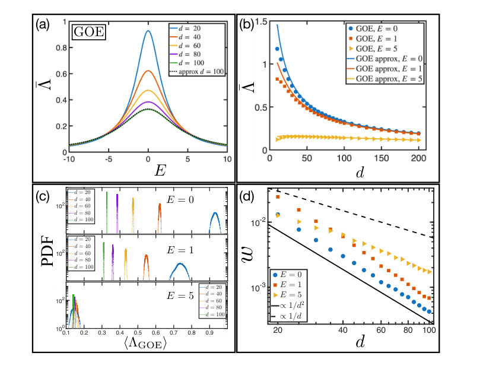
<figcaption class="paper-figure-caption"><b>Fig 3.</b> Figure 3. Numerical simulations for the GOE ensemble. (a) Sample-averaged mean LE as a function of the energy E for different matrix dimensions d (solid lines). The sample size varies from 200 realizations for d = 20 to 3 realizations for d = 100. The black dashed line represents the approximation, Eq. (24), for d = 100. (b) Sample-averaged mean LE as a function of the matrix dimension d, together with the approximation, Eq. (24), for E = 0, 1, and 5. (c) Probability density function of the sample-averaged mean LE (logarithmic vertical axis) for different values of d and E, obtained from 1000 realizations for each parameter set. The solid lines are normal-distribution fits, N(µ, w2). (d)...</figcaption>
</figure>
<figure class="paper-figure-card">
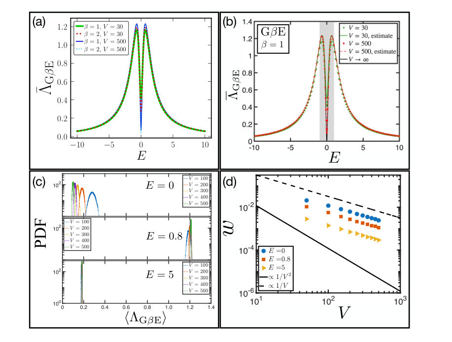
<figcaption class="paper-figure-caption"><b>Fig 4.</b> Figure 4. Mean LE of the GβE ensembles. (a) Sample-averaged mean LE as a function of the energy E for β = 1, 2 and V = 30, 500. (b) Sample-averaged mean LE as a function of the energy E for β = 1, V = 30 (green markers) and V = 500 (red markers), together with the approximation given by Eq. (28). The black solid line corresponds to the asymptotic limit V →∞, while the shaded region indicates the transition regime. (c) Probability density function of the sample-averaged mean LE (logarithmic vertical axis) for different values of V and E, obtained from 1000 realizations for each parameter set. The solid lines are normal-distribution fits, N(µ, w2). (d) Width parameter w of the...</figcaption>
</figure>
<figure class="paper-figure-card">
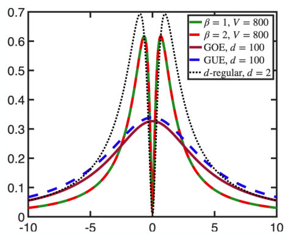
<figcaption class="paper-figure-caption"><b>Fig 5.</b> Figure 5. Comparison of the mean LE for the GβE and Wigner–Dyson ensembles with that of the d-regular graph (d = 2). For graphical clarity, ΛGβE is multiplied by a factor of 1/2.</figcaption>
</figure>
</div>
<p><strong>Summary.</strong> This theoretical work develops a method to quantify quantum chaos in systems governed by random Hermitian matrices by calculating the semiclassical Lyapunov exponent. It applies this formalism to several random matrix ensembles, deriving the mean LE and spectral gap as functions of energy. The results provide quantitative measures of how quickly quantum information scrambles and approaches equilibrium in these complex quantum systems.</p>
<p><strong>Why it may be interesting.</strong> The connection between semiclassical chaos indicators (like LE) and quantum observables (like entanglement entropy or OTOCs) is crucial for understanding thermalization and quantum scrambling in complex many-body systems.</p>
<details>
<summary>Detailed structure</summary>
<p><strong>Main problem.</strong> The paper characterizes the rate of chaotic evolution in quantum systems by defining and calculating the semiclassical Lyapunov exponent ($\Lambda$) and the spectral gap.</p>
<p><strong>Main result.</strong> The mean Lyapunov exponent ($\langle\Lambda
angle$) and its variance are derived for various random-matrix ensembles (GOE, GUE, $d$-regular graphs, $Geta E$), showing how they characterize information scrambling and approach equilibrium.</p>
<p><strong>Method.</strong> The analysis uses a quantum Poincaré map $U(E)$ to derive a corresponding classical Markov process, allowing the application of established techniques from classical chaos theory to quantum dynamics.</p>
<p><strong>Model / system.</strong> The study applies to quantum systems whose dynamics are governed by a finite-dimensional Hermitian Hamiltonian $H$ derived from random matrices. The dynamics are analyzed via the energy-dependent quantum Poincaré map $U(E)$.</p>
<p><strong>Key observables.</strong> Mean Lyapunov Exponent ($\langle\Lambda
angle$), variance of the LE ($\langle(\delta\Lambda)^2
angle$), and the spectral gap.</p>
<p><strong>Important parameters / regimes.</strong> Energy ($E$), graph degree ($d$), and the random matrix ensemble type (GOE, GUE, $Geta E$).</p>
<p><strong>Assumptions / limitations.</strong> The analysis relies on mapping quantum dynamics to a classical Markov process via the squared moduli of quantum amplitudes, and approximations are used for calculating LE moments and thermal averages.</p>
<p><strong>Figures summary.</strong> Figures illustrate the saturation behavior of quantum and classical entropy ($S_U(t)$ and $S_B(t)$) over time for different ensembles.</p>
<p><strong>Paper structure.</strong> The paper develops the formalism by defining the quantum Poincaré map, deriving the classical Markov map, calculating the mean LE using spectral properties, and finally applying this framework to calculate LEs and spectral gaps for specific random matrix ensembles, including thermal averaging.</p>
</details>
<details>
<summary>Abstract</summary>
<p>In a recent paper, a semiclassical Lyapunov exponent associated with a quantum Hamiltonian represented by a finite-dimensional Hermitian matrix was defined and placed on a mathematical foundation. The Lyapunov exponent characterizes the early stages of the evolution toward the ergodic state, while the late stages are characterized by the spectral gap of the corresponding Markov matrix. Here, we apply this formalism to five random-matrix ensembles. For each ensemble, we derive the mean Lyapunov exponent, its variance, and the spectral gap as functions of energy. We also present the corresponding thermal averages. Extensive numerical data are compared with the theoretical predictions.</p>
</details>
<p><sub><a href="#top">↑ back to top</a></sub></p>

<p><a id="paper-2608.22769"></a></p>
<h3 id="classical-and-quantum-spectral-density-estimation-under-local-graph-access"><a href="http://arxiv.org/abs/2608.22769v1">Classical and quantum spectral density estimation under local graph access</a></h3>
<p><strong>Authors:</strong> Rong-Hua Li, Meihao Liao, Yichun Yang<br>
<strong>Type:</strong> theory · <strong>Category:</strong> quantum information and computing · <strong>PDF:</strong> <a href="https://arxiv.org/pdf/2608.22769v1">https://arxiv.org/pdf/2608.22769v1</a><br>
<strong>Analysis basis:</strong> full PDF text, analyzed in chunks</p>
<div class="figure-strip-hint">↔ Scroll figures horizontally</div>
<div class="paper-figures-scroll">
<figure class="paper-figure-card">
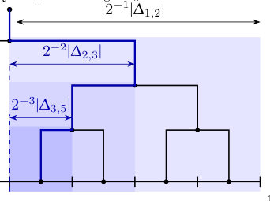
<figcaption class="paper-figure-caption"><b>Fig 1.</b> Figure 3. Dyadic intervals of [−1, 1]. The k-th interval at level ℓis joined to its parent by an edge of length 2−ℓ. Its imbalance ∆ℓ,k is the difference between the masses that bν and ν assign to that interval, equivalently an entry of Aℓ(bν −νgrid). The net flow across the parent edge equals |∆ℓ,k| and contributes 2−ℓ|∆ℓ,k| to dtree(bν, νgrid). The resulting tree routing is a coupling of bν and νgrid, and W1(bν, νgrid) ⩽2dtree(bν, νgrid).</figcaption>
</figure>
</div>
<p><strong>Summary.</strong> This paper analyzes spectral density estimation for graphs under limited local access, comparing classical and quantum query complexity. It proves that while the classical model requires an exponentially large number of queries, the quantum model achieves a polynomial scaling, demonstrating a clear quantum advantage. This advances the understanding of quantum query complexity in graph signal processing.</p>
<p><strong>Why it may be interesting.</strong> The work provides a concrete example where quantum computation offers a significant, provable speedup over classical algorithms for a problem rooted in graph spectral analysis, which is highly relevant to quantum algorithms for physical systems.</p>
<details>
<summary>Detailed structure</summary>
<p><strong>Main problem.</strong> The paper addresses the problem of estimating the spectral density of a graph's normalized adjacency matrix under limited local access to the graph structure.</p>
<p><strong>Main result.</strong> It demonstrates a quantum advantage by showing that the quantum query complexity for this estimation scales polynomially ($\Omega(\epsilon^{-4/3})$) with the error $\epsilon$, significantly better than the exponential lower bound ($\Omega(2^{1/\epsilon})$) established for the classical local access model.</p>
<p><strong>Method.</strong> The authors combine spectral graph theory with advanced quantum query complexity techniques, utilizing tools from coding theory (self-dual codes, Lagrangians) to establish lower bounds for quantum bit oracles, which are then mapped to graph queries.</p>
<p><strong>Model / system.</strong> The system is an unweighted graph $G$, and the object of study is its normalized adjacency matrix $\mathbf{N}_G$. The analysis is framed within the quantum local access model, where graph functions are queried via reversible XOR oracles.</p>
<p><strong>Key observables.</strong> The spectral density $
ho_G$ of the graph, and the error metric is the Wasserstein-1 distance $W_1(	ilde{
ho}, 
ho_G)$.</p>
<p><strong>Important parameters / regimes.</strong> The approximation error $\epsilon$ is the key parameter, determining the scaling of the required number of queries.</p>
<p><strong>Assumptions / limitations.</strong> The quantum model assumes graph functions can be exposed as reversible XOR oracles implementable in $O(1)$ time.</p>
<p><strong>Figures summary.</strong> No specific figures were summarized, but the notes indicate a comparison of classical and quantum upper/lower bounds in a table.</p>
<p><strong>Paper structure.</strong> The paper first establishes the classical lower bound for spectral density estimation. It then develops the mathematical machinery using quadratic forms and self-dual codes to prove a quantum query lower bound, culminating in the comparison showing the quantum advantage.</p>
</details>
<details>
<summary>Abstract</summary>
<p>We study spectral density estimation for the normalized adjacency matrix of an unweighted graph under local access model. Previously, Cohen-Steiner et al. [KDD 2018] proposed an algorithm for $\varepsilon$-approximate spectral density estimation in the Wasserstein-1 distance, using $2^{O(1/\varepsilon)}$ local queries to the graph. In this paper, we prove that every constant-success estimator with Wasserstein--$1$ error at most $\eps$ requires $2^{Ω(1/\eps)}$ queries, showing that the Cohen-Steiner algorithm is optimal up to constant in the exponent. This resolves the open problem left by previous researches Jin et al. [COLT 2023] and Peng et al. [COLT 2026].   We then turn to quantum local access model. We give an $\widetilde O(\eps^{-3})$-query algorithm estimating the spectral density with Wasserstein-1 error at most $\eps$. Finally, we prove a $\widetildeΩ(\eps^{-4/3})$ quantum lower bound when the graph is sufficiently large. As a result, quantum local access model changes the dependence on $\eps$ from exponential to polynomial.</p>
</details>
<p><sub><a href="#top">↑ back to top</a></sub></p>

<p><a id="paper-2608.22361"></a></p>
<h3 id="dataset-complexity-shapes-finite-distance-loss-geometry-in-neural-networks"><a href="http://arxiv.org/abs/2608.22361v1">Dataset Complexity Shapes Finite-Distance Loss Geometry in Neural Networks</a></h3>
<p><strong>Authors:</strong> Jaeyong Bae, Hawoong Jeong<br>
<strong>Type:</strong> theory · <strong>Category:</strong> disordered systems and neural networks · <strong>PDF:</strong> <a href="https://arxiv.org/pdf/2608.22361v1">https://arxiv.org/pdf/2608.22361v1</a><br>
<strong>Analysis basis:</strong> full PDF text, analyzed in chunks</p>
<div class="figure-strip-hint">↔ Scroll figures horizontally</div>
<div class="paper-figures-scroll">
<figure class="paper-figure-card">
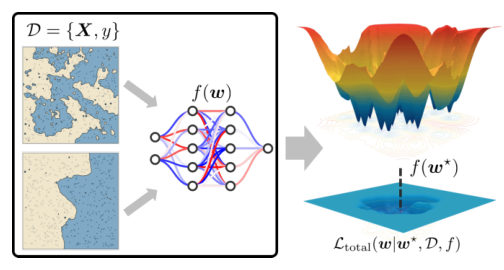
<figcaption class="paper-figure-caption"><b>Fig 1.</b> FIG. 1. Schematic overview of our study. We examine how dataset complexity affects finite-distance loss geometry around trained neural-network solutions.</figcaption>
</figure>
<figure class="paper-figure-card">
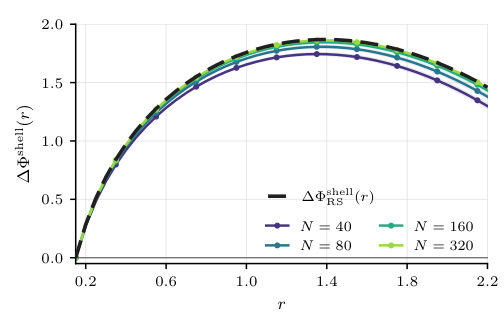
<figcaption class="paper-figure-caption"><b>Fig 2.</b> FIG. 2. Full radial-shell local entropy in the controlled percep- tron benchmark. The dashed black curve shows the indepen- dently calculated thermodynamic-limit RS result ∆Φshell RS (r). Colored curves show the SMC estimates ∆Φshell N (r) for N ∈ {40, 80, 160, 320} trainable weights. Shaded bands denote one standard error across datasets after averaging 10 references within each of 10 independent datasets. Each radius uses 215</figcaption>
</figure>
<figure class="paper-figure-card">
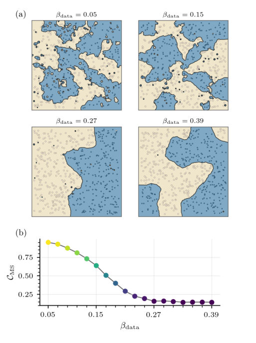
<figcaption class="paper-figure-caption"><b>Fig 3.</b> FIG. 3. Controlled organization of the synthetic labels. (a) Four representative observed configurations spanning the con- trolled sweep. The colored regions and black interfaces visu- alize the organization of the sampled labels. (b) Mean CMS at every βdata, with standard errors across 60 independent datasets.</figcaption>
</figure>
<figure class="paper-figure-card">
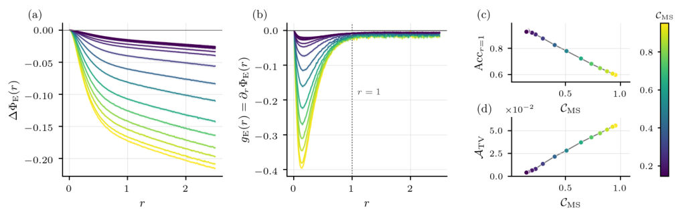
<figcaption class="paper-figure-caption"><b>Fig 4.</b> FIG. 4. Local entropy across the controlled synthetic sweep. (a) Centered local entropy ∆ΦE(r). More negative values correspond to a smaller effective solution volume relative to r0. (b) Its radial derivative gE(r). The dotted line marks r = 1. (c) Particle-weighted, sample-wise training accuracy among the configurations contributing to the r = 1 shell, plotted against CMS. (d) Total radial variation ATV plotted against CMS. Curves show means at each βdata after averaging ten references within each of 60 independent datasets. Shaded bands and error bars denote standard errors across datasets. Color denotes CMS.</figcaption>
</figure>
<figure class="paper-figure-card">
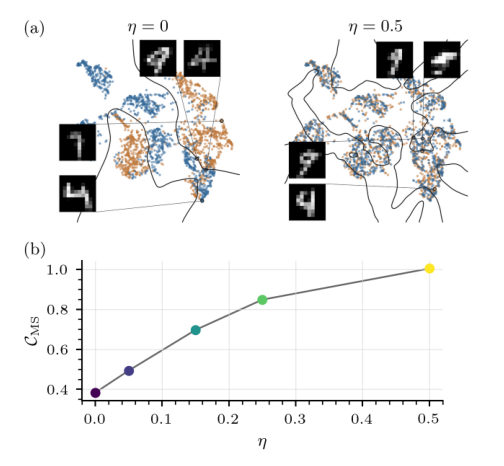
<figcaption class="paper-figure-caption"><b>Fig 5.</b> FIG. 5. Dataset organization in the MNIST label-noise sweep. (a) Endpoint visualizations in shared UMAP coordinates for the clean endpoint (η = 0) and randomized endpoint (η = 0.5). Colors show the observed labels, and black contours summarize their organization in the embedding. UMAP is used only for visualization. (b) Mean CMS at each noise probability, with standard errors across ten paired datasets. The complexity measure is calculated in the standardized 100-dimensional input space.</figcaption>
</figure>
</div>
<p><strong>Summary.</strong> This work connects the structural complexity of finite datasets to the geometry of the loss landscape in neural networks. By measuring local entropy, the authors show that dataset structure dictates how the effective volume of low-loss solutions contracts as one moves away from the trained parameters. This provides a deep theoretical insight into the relationship between data statistics and the underlying energy landscape organization.</p>
<p><strong>Why it may be interesting.</strong> The connection between data structure (a classical ML concept) and the geometry of the energy landscape (a core concept in statistical mechanics and disordered systems) provides a powerful, non-trivial link between machine learning theory and condensed matter physics.</p>
<details>
<summary>Detailed structure</summary>
<p><strong>Main problem.</strong> The study investigates how the structural complexity of a finite training dataset influences the geometry of the loss landscape in neural networks at finite distances from the trained solution.</p>
<p><strong>Main result.</strong> Greater dataset complexity causes a non-uniform contraction of the effective solution volume (local entropy) near the solution, suggesting dataset structure dictates the organization of low-loss neighborhoods across finite distances.</p>
<p><strong>Method.</strong> The authors employ local entropy, inspired by spin-glass theory, to measure the effective volume of low-loss parameter configurations, estimating it using adaptive sequential Monte Carlo and deriving theoretical limits via replica methods.</p>
<p><strong>Model / system.</strong> The model involves fully connected feed-forward neural networks trained on datasets (like MNIST or synthetic 2D families). The analysis compares the dataset complexity, quantified by local label mixing, against the loss landscape geometry.</p>
<p><strong>Key observables.</strong> Local entropy, radial derivative of local entropy, Multiscale Complexity (CMS), and the full radial-shell local entropy density ($\Phi_{RS}(r)$).</p>
<p><strong>Important parameters / regimes.</strong> Dataset complexity (local label mixing), distance from reference solution ($r$), and regularization parameters ($\gamma, \lambda$).</p>
<p><strong>Assumptions / limitations.</strong> The analysis relies on adapting concepts from spin-glass theory (e.g., Franz-Parisi construction) and utilizes replica symmetry breaking (RS) ansatz in the theoretical derivations.</p>
<p><strong>Figures summary.</strong> Figures schematically illustrate how dataset complexity affects finite-distance loss geometry, and one figure compares finite-N Monte Carlo estimates of local entropy against the thermodynamic limit.</p>
<p><strong>Paper structure.</strong> The paper progresses from defining the problem (dataset complexity vs. loss geometry) to developing theoretical tools (local entropy estimation via SMC and replica methods) and finally presenting results showing that dataset structure controls the contraction profile of the solution volume.</p>
</details>
<details>
<summary>Abstract</summary>
<p>Finite datasets can share the same size and low-order statistics while differing strongly in structural complexity. We connect this dataset complexity to loss-landscape geometry by pairing local label mixing across neighborhood scales with local entropy around trained neural-network solutions. Adapted from the Franz--Parisi construction in spin-glass theory, local entropy measures the effective volume of low-loss, solution-like parameter configurations at each distance from a reference. We estimate it in finite networks using adaptive sequential Monte Carlo. In a controlled synthetic sweep, greater dataset complexity produces a larger decrease in local entropy near the reference. Farther away, its radial derivative becomes weak and nearly common across conditions. Dataset complexity therefore changes where the effective solution volume contracts, rather than making it decrease uniformly faster. Experiments on real image data show the same qualitative trend, with label randomization further amplifying the effect. These results show that dataset structure shapes how low-loss neighborhoods are organized across finite distances from trained solutions.</p>
</details>
<p><sub><a href="#top">↑ back to top</a></sub></p>

<p><a id="paper-2608.23127"></a></p>
<h3 id="efficient-quantum-simulation-of-linearized-vlasov-poisson-dynamics-using-trotter-and-thrift-hamiltonian-simulation-methods"><a href="http://arxiv.org/abs/2608.23127v1">Efficient Quantum Simulation of Linearized Vlasov--Poisson Dynamics Using Trotter and THRIFT Hamiltonian Simulation Methods</a></h3>
<p><strong>Authors:</strong> Kartick Paul, Rahul V, S. Aravinda, Reetesh K. Gangwar<br>
<strong>Type:</strong> theory · <strong>Category:</strong> quantum information and computing · <strong>PDF:</strong> <a href="https://arxiv.org/pdf/2608.23127v1">https://arxiv.org/pdf/2608.23127v1</a><br>
<strong>Analysis basis:</strong> full PDF text, analyzed in chunks</p>
<div class="figure-strip-hint">↔ Scroll figures horizontally</div>
<div class="paper-figures-scroll">
<figure class="paper-figure-card">
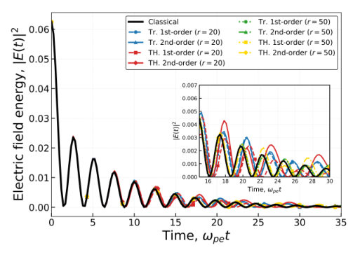
<figcaption class="paper-figure-caption"><b>Fig 1.</b> FIG. 1. Temporal evolution of the electric-field energy, |E(t)|2 for the non-magnetized (Ωc = 0) linearized Vlasov- Poisson system with k = 0.45, Nv = 31, vmax = 5.0 vT and ∆t = 0.24. The resulting 32-dimensional Hamiltonian is en- coded into a five-qubit register. The black solid curve rep- resents the exact Hamiltonian evolution, while the colored curves show the first and second-order Trotter–Suzuki (Tr.) and THRIFT (TH.) approximations for r = 20 and r = 50 product-formula steps. The approximate solutions reproduce the oscillatory decay of the electric-field energy and converge toward the exact evolution as the number of product-formula steps and the approximation order increase are...</figcaption>
</figure>
<figure class="paper-figure-card">

<figcaption class="paper-figure-caption"><b>Fig 2.</b> Figure 1 shows the electric-field energy obtained from the exact Hamiltonian evolution together with the corre- sponding Trotter–Suzuki and THRIFT approximations.</figcaption>
</figure>
<figure class="paper-figure-card">
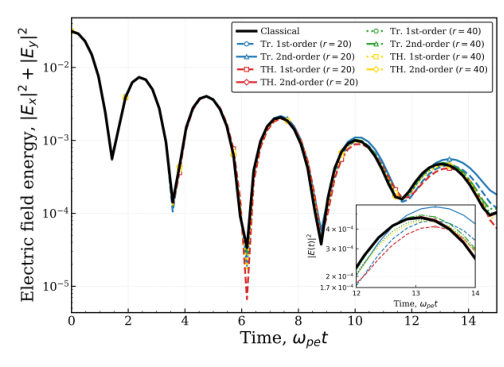
<figcaption class="paper-figure-caption"><b>Fig 3.</b> FIG. 2. Semi-logarithmic evolution of the normalized electric-field energy, E(t) = |Ex(t)|2 + |Ey(t)|2, for the mag- netized linearized Vlasov–Poisson system with kx = ky = 0.4 and B0 = 0.3. A 31 × 31 velocity-space discretization is used, giving312 + 2 = 963 physical degrees of freedom and a 1024- dimensional padded Hilbert space encoded by ten qubits. The black solid curve denotes the exact Hamiltonian evo- lution, while the colored curves show the first- and second- order Trotter–Suzuki (Tr.) and THRIFT (TH.) simulations for r = 20 and r = 40 decomposition steps.</figcaption>
</figure>
<figure class="paper-figure-card">
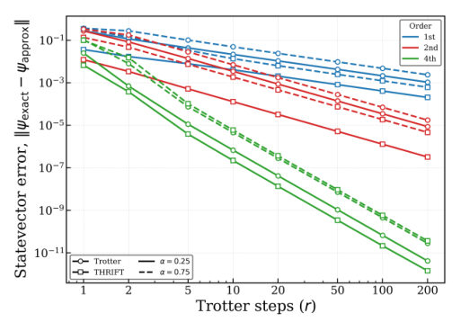
<figcaption class="paper-figure-caption"><b>Fig 4.</b> FIG. 3. State-vector error, ∥ψexact(5)−ψapprox(5)∥2,as a func- tion of the number of product-formula steps r for the first, sec- ond and fourth-order Trotter and THRIFT algorithms, eval- uated at the fixed evolution time t = 5. Solid and dashed curves correspond to interaction strengths α = 0.25 and α = 0.75,respectively.</figcaption>
</figure>
<figure class="paper-figure-card">
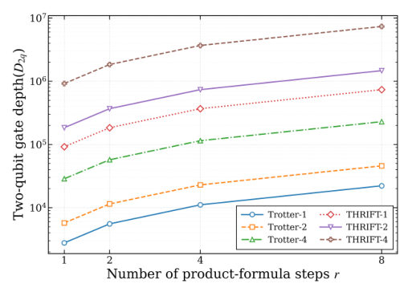
<figcaption class="paper-figure-caption"><b>Fig 5.</b> FIG. 4. Two-qubit gate depth D2q versus the number of product-formula steps r for first, second and fourth-order Trotter and THRIFT circuits. The vertical axis D2q is plotted on a logarithmic scale. The calculations use the discretized Vlasov–Poisson Hamiltonian with Nv = 31 (five qubits) and a total evolution time t = 1. The two-qubit gate depth is calculated by retaining only two-qubit operations when de- termining the circuit depth.</figcaption>
</figure>
</div>
<p><strong>Summary.</strong> This paper tackles the difficult quantum simulation of plasma dynamics governed by the Vlasov-Poisson system by mapping it onto a quantum Hamiltonian. It systematically compares the performance of Trotter-Suzuki and THRIFT time-evolution methods. The results establish that advanced techniques, particularly THRIFT combined with Richardson extrapolation, provide a resource-efficient pathway for accurate quantum simulation of plasma physics.</p>
<p><strong>Why it may be interesting.</strong> This work directly addresses the computational bottleneck of simulating complex many-body physics (like plasma) on near-term quantum hardware by rigorously comparing advanced quantum simulation algorithms.</p>
<details>
<summary>Detailed structure</summary>
<p><strong>Main problem.</strong> The core challenge is developing efficient quantum simulation protocols for the high-dimensional, non-equilibrium dynamics described by the linearized Vlasov-Poisson system.</p>
<p><strong>Main result.</strong> The study provides a comprehensive comparison showing that the THRIFT framework, combined with higher-order Trotter formulas and Richardson extrapolation, offers a resource-efficient path to accurately simulating plasma dynamics on gate-based quantum computers.</p>
<p><strong>Method.</strong> The time evolution operator $e^{-iHt}$ is approximated using product formulas (Trotter-Suzuki and THRIFT) and the resulting errors are systematically reduced using Richardson extrapolation.</p>
<p><strong>Model / system.</strong> The system is the linearized Vlasov-Poisson equation describing plasma dynamics, which is reformulated into a Hermitian Hamiltonian $H = H_{	ext{stream}} + H_{	ext{electric}} + H_{	ext{magnetic}}$ suitable for quantum simulation.</p>
<p><strong>Key observables.</strong> Electric field evolution, state fidelity, energy conservation, entanglement entropy, and quantum resource requirements (circuit depth, two-qubit gate complexity).</p>
<p><strong>Important parameters / regimes.</strong> The small parameter $\alpha$ (related to the Hamiltonian decomposition $H = H_0 + \alpha H_1$) and the time step $\Delta t$ are crucial for error analysis.</p>
<p><strong>Assumptions / limitations.</strong> The plasma is linearized, considering only electron dynamics with ions treated as a fixed background, and the simulation is mapped onto a gate-based quantum computation model.</p>
<p><strong>Figures summary.</strong> Figures compare probability distributions and extracted electric-field energy between exact evolution and various simulation orders (e.g., 1st-order Trotter vs. THRIFT), demonstrating the error suppression achieved by higher-order methods and Richardson extrapolation.</p>
<p><strong>Paper structure.</strong> The paper introduces the physical model and Hamiltonian, details the quantum simulation techniques (Trotter vs. THRIFT), systematically evaluates performance across multiple diagnostics (fidelity, energy, resources), and concludes by establishing practical guidelines for resource-efficient simulation.</p>
</details>
<details>
<summary>Abstract</summary>
<p>The Vlasov--Poisson system provides the fundamental kinetic description of plasma and plays a central role in understanding collective phenomena such as Landau damping and wave--particle interactions. Efficient numerical simulation of these dynamics remains challenging because of the high dimensionality of phase space. In this work, we studied magnetized and non-magnetized plasma using a quantum simulation framework for the linearized Vlasov-Poisson equation by reformulating the discretized system as a Hermitian Hamiltonian suitable for gate-based quantum computation. The time evolution is implemented using first, second and fourth-order Trotter--Suzuki product formulas and the recently proposed Time-Resolved Interaction Framework (THRIFT). The performance of the different simulation methods is systematically evaluated through electric field evolution, state fidelity, convergence behavior, energy conservation, entanglement entropy and quantum resource requirements, including circuit depth and two-qubit gate complexity, for both magnetized and non-magnetized plasma models. To further reduce finite time step errors without increasing circuit depth, Richardson extrapolation is incorporated as a error-mitigation technique. The results provide a comprehensive comparison of Trotter and THRIFT approaches and establish practical guidelines for accurate and resource-efficient quantum simulation of plasma dynamics on gate-based quantum computers.</p>
</details>
<p><sub><a href="#top">↑ back to top</a></sub></p>

<p><a id="paper-2608.22705"></a></p>
<h3 id="evolution-of-cooperation-with-q-learning-how-much-information-do-we-need"><a href="http://arxiv.org/abs/2608.22705v1">Evolution of cooperation with Q-learning: how much information do we need?</a></h3>
<p><strong>Authors:</strong> Yile Ku, Xin Ou, Jiqiang Zhang, Shengfeng Deng, Huiji Yue, Li Chen<br>
<strong>Type:</strong> theory · <strong>Category:</strong> disordered systems and neural networks · <strong>PDF:</strong> <a href="https://arxiv.org/pdf/2608.22705v1">https://arxiv.org/pdf/2608.22705v1</a><br>
<strong>Analysis basis:</strong> full PDF text, analyzed in chunks</p>
<div class="figure-strip-hint">↔ Scroll figures horizontally</div>
<div class="paper-figures-scroll">
<figure class="paper-figure-card">

<figcaption class="paper-figure-caption"><b>Fig 1.</b> FIG. 1: Scheme of the neighborhood structure on a two-dimensional lattice. For k = 1 ∼4, neighbors are randomly drawn from the four nearest neighbors (pink). For k = 5 ∼8, the four nearest neighbors are included, and the remaining neighbors are randomly selected from the four diagonal nearest neighbors (green). For k = 9 ∼12, all eight nearest and diagonal nearest neighbors are included, and the remaining neighbors are randomly chosen from the next-nearest neighbors (blue).</figcaption>
</figure>
<figure class="paper-figure-card">

<figcaption class="paper-figure-caption"><b>Fig 2.</b> FIG. 2: Impact of information on cooperation. (a,c) shows the dependence of the cooperation level on information quantity for 2d lattice and BA networks, respectively. In (a), the control parameter k is the neighbourhood size varied in our study, fC = NC/N, where NC is the number of cooperators and N = L × L is the total population size. For BA networks, k represents the node degree, and fC(k) = NC(k)/Nk, where Nk is the total number of individuals with degree k and NC(k) is the number of cooperators among them. The red dashed line in (a) is our semi-analytical treatment (Sec. V). Each data point is averaged over the last 1 × 104 time steps and over 50 independent realizations; error bars...</figcaption>
</figure>
<figure class="paper-figure-card">

<figcaption class="paper-figure-caption"><b>Fig 3.</b> FIG. 3: Cooperation preference analysis. (a) The state densities for different neighborhood sizes k on the 2d square lattice; the shaded portion of each bar represents the cooperation preference, defined as the fraction of cases with ∆Qsj &gt; 0. (b) The cooperation preference on 2d lattice, i.e., the fraction of ∆Qsj &gt; 0 within each state, where the state labeling is normalized by ˆj = j/k. (c, d) show the corresponding results for BA networks. All data are averaged over the last 1 × 104 steps after reaching steady state, and over 50 independent realizations. Other parameters: b = 0.1, α = 0.1, γ = 0.9, ε = 0.01.</figcaption>
</figure>
<figure class="paper-figure-card">

<figcaption class="paper-figure-caption"><b>Fig 4.</b> FIG. 4: Strategy persistence and switching. (a, d) Average cooperation duration ⟨TC⟩; (b, e) Average defection duration ⟨TD⟩; (c, f) Strategy switching frequency. The upper row (a-c) corresponds to the 2d square lattice, and the bottom row (d-f) to the BA network. The insets in (d-f) show the full range of degrees, with the shaded regions indicating the enlarged portions displayed in the main panels. All data are averaged over the last 1 × 104 time steps after reaching the steady state at tmax = 2 × 106, and over 50 independent realizations. Error bars denote the standard deviation of the mean across 50 realizations. Other parameters: b = 0.1, α = 0.1, γ = 0.9, ε = 0.01.</figcaption>
</figure>
<figure class="paper-figure-card">

<figcaption class="paper-figure-caption"><b>Fig 5.</b> FIG. 5: State densities for different numbers of neighbors on 2d lattice. Subplots (a-l) are for neighborhood sizes k = 1 ∼12; both simulation and theoretical results are shown. All the setups are the same as Fig. 2(a)</figcaption>
</figure>
</div>
<p><strong>Summary.</strong> This work models cooperation evolution using Q-learning on structured populations, treating neighborhood size as a proxy for available information. It reveals that cooperation is maximized not by having the most information, but by having an optimal, moderate amount. This suggests a fundamental trade-off between information sufficiency and decision-making tractability.</p>
<p><strong>Why it may be interesting.</strong> While the core topic is socio-physics, the use of Q-learning on complex networks to model emergent collective behavior shares methodological parallels with how ML/NN concepts are applied to complex physical systems.</p>
<details>
<summary>Detailed structure</summary>
<p><strong>Main problem.</strong> The paper investigates the evolutionary basis of cooperation, specifically challenging the intuition that more information always leads to better decision-making.</p>
<p><strong>Main result.</strong> A non-monotonic, inverted U-shaped relationship was found, demonstrating that an optimal, moderate amount of information is required to maximize cooperation.</p>
<p><strong>Method.</strong> The study employs a Reinforcement Learning (Q-learning) framework to model how individuals in a structured population learn optimal strategies through trial and error.</p>
<p><strong>Model / system.</strong> The model simulates cooperation evolution within a structured population placed on 2D square lattices or Barabási-Albert scale-free networks, playing a game like the Prisoner's Dilemma.</p>
<p><strong>Key observables.</strong> Cooperation prevalence ($f_C$), cooperation preference ($\Delta Q_{s_j}$), and the relationship between $f_C$ and neighborhood size ($k$).</p>
<p><strong>Important parameters / regimes.</strong> Neighborhood size ($k$), learning rate ($\alpha=0.1$), discount factor ($\gamma=0.9$), and exploration rate ($\epsilon=0.01$).</p>
<p><strong>Assumptions / limitations.</strong> The primary assumption is that the Q-learning framework accurately models an 'introspective learning process' distinct from simple imitation.</p>
<p><strong>Figures summary.</strong> Figures show the inverted U-shaped dependence of cooperation on neighborhood size for both 2D lattices and BA networks, and illustrate state densities and cooperation preferences for varying $k$.</p>
<p><strong>Paper structure.</strong> The paper establishes the problem, details the Q-learning methodology on structured graphs, presents the key finding of non-monotonicity, and concludes with mechanistic interpretations regarding information balance.</p>
</details>
<details>
<summary>Abstract</summary>
<p>Cooperation is ubiquitous in both natural and human societies, yet its evolutionary basis remains a major challenge. A long-standing puzzle is whether having more information leads to better decision-making and thus a higher level of cooperation. To address this question, we adopt a recently developed reinforcement learning framework in which individuals learn through trial and error to maximize cumulative rewards - a paradigm that has successfully explained diverse emergent patterns in human behaviors. Specifically, we equip a structured population with the Q-learning algorithm and systematically vary the size of the interactive neighborhood, which serves as a proxy for perceived information. Interestingly, we observe a non-monotonic relationship between cooperation prevalence and neighborhood size in both two-dimensional square lattices and Barabasi-Albert scale-free networks. This inverted U-shaped dependence reveals that an optimal amount of information exists, yielding the highest level of cooperation. Mechanistic analyses show that a moderate neighborhood size enables individuals to strike an optimal balance between information sufficiency and decision-making tractability. This balance allows them to detect reciprocal opportunities while avoiding the deterioration of decision quality due to information overload. Our findings challenge everyday intuition, suggesting that a proper amount of information - not more - is optimal for the emergence of cooperation.</p>
</details>
<p><sub><a href="#top">↑ back to top</a></sub></p>

<p><a id="paper-2608.23002"></a></p>
<h3 id="exact-and-optimal-recursive-quantum-search-via-hilbert-space-decomposition"><a href="http://arxiv.org/abs/2608.23002v1">Exact and Optimal Recursive Quantum Search via Hilbert-Space Decomposition</a></h3>
<p><strong>Authors:</strong> John Burke, Ciaran McGoldrick<br>
<strong>Type:</strong> theory · <strong>Category:</strong> quantum information and computing · <strong>PDF:</strong> <a href="https://arxiv.org/pdf/2608.23002v1">https://arxiv.org/pdf/2608.23002v1</a><br>
<strong>Analysis basis:</strong> full PDF text, analyzed in chunks</p>
<div class="figure-strip-hint">↔ Scroll figures horizontally</div>
<div class="paper-figures-scroll">
<figure class="paper-figure-card">

<figcaption class="paper-figure-caption"><b>Fig 1.</b> Figure 1: One level of the recursion (6), consisting of two mirrored sequences of ti alternating applications of Wi−1 and Sψi, separated by a central Sψi. The reflection Sψi acts on registers i, . . . , 1, while the oracle enters only at the base through W0 = Sx.</figcaption>
</figure>
<figure class="paper-figure-card">

<figcaption class="paper-figure-caption"><b>Fig 2.</b> Figure 2: The invariant plane of Lemma 3.4, drawn at the outermost level and at a level of the corrective cascade. In both panels the iterate is the product of two reflections within the plane. The first reflection is about |e1⟩. The second is about the axis |w⟩of (25), at angle γ from |e1⟩, so the iterate is the rotation by −2γ. The target ray of (27) lies at γ −π/2, perpendicular to |w⟩. In panel (a) the initial state at level m is |e(m) 1 ⟩= |ψ⟩. Each iterate rotates it by −2γm towards the target ray. The phase-tuned step of Section 3.3 absorbs the angle δ left after the last whole iterate. In panel (b) level k receives the residual |ϕk⟩of (26), at angle π/2 −2tkγk. The tk inverse...</figcaption>
</figure>
<figure class="paper-figure-card">

<figcaption class="paper-figure-caption"><b>Fig 3.</b> Figure 3: The relabelling of Eqs. (71) and (72) on a 16 × 16 grid, with bases (b3, b2, b1) = (2, 2, 4) and the origin at the top-left corner. Register i holds digit i of each axis, and fixing the registers above level i selects the sub-cube of side ℓi containing v, shaded darker at each level.</figcaption>
</figure>
</div>
<p><strong>Summary.</strong> This paper introduces a novel quantum search algorithm that achieves optimality by recursively decomposing the Hilbert space structure. By constructing the search operator from reflections over this decomposition, the authors derive an exact description of the state evolution, avoiding accumulated errors. This method yields optimal gate counts for both unstructured and spatial quantum search problems.</p>
<p><strong>Why it may be interesting.</strong> The exact recursive description and the focus on structural decomposition provide a powerful, generalizable framework for analyzing quantum algorithms beyond simple amplitude amplification bounds.</p>
<details>
<summary>Detailed structure</summary>
<p><strong>Main problem.</strong> The paper addresses the limitation of current quantum search algorithms by proposing a method that deeply exploits the underlying structure of the Hilbert space.</p>
<p><strong>Main result.</strong> They achieve the simultaneously optimal $\Theta(\sqrt{N})$ oracle and non-oracle gate counts for unstructured search and recover known optimal bounds for spatial search in $d$-dimensional grids.</p>
<p><strong>Method.</strong> The core method involves recursively decomposing the Hilbert space and constructing the search operator using reflections over this partition, which reduces the dynamics to a single rotation at each level.</p>
<p><strong>Model / system.</strong> The model is the quantum search problem, analyzed by decomposing the Hilbert space ($\mathcal{H} = \mathcal{H}_m \otimes \cdots \otimes \mathcal{H}_1$) such that both the initial and target states factorize over this product structure.</p>
<p><strong>Key observables.</strong> Success probability (derived exactly from the accumulated rotation angle), oracle gate count, and non-oracle gate count.</p>
<p><strong>Important parameters / regimes.</strong> The dimension $N$ of the search space, the dimensionality $d$ of the grid, and the recurrence parameters $\{t_i\}$ controlling the recursion.</p>
<p><strong>Assumptions / limitations.</strong> The initial state $|\psi
angle$ and target state $|x
angle$ must factorize over the chosen product partition of the Hilbert space.</p>
<p><strong>Figures summary.</strong> Not specified in the notes.</p>
<p><strong>Paper structure.</strong> The paper introduces the decomposition technique, derives the recursive structure using reflections, analyzes the dynamics via an angle recurrence, and applies this framework to unstructured and spatial search settings to derive optimal gate counts.</p>
</details>
<details>
<summary>Abstract</summary>
<p>Current approaches to quantum search fail to deeply exploit extant structure in the underlying Hilbert space. Decomposing the search by this structure empowers new strategies and formulations for quantum search and algorithm design. We present a new decomposition technique acting directly on this structure by recursively decomposing the Hilbert space and constructing the search operator from reflections over the resulting partition. When initial and target states factorise over this partition, dynamics reduce to a single rotation in a two-dimensional plane at each level, with angle given by a scalar recurrence. This recurrence avoids error accumulation from separately bounding success probabilities at each level, yielding an exact state description enabling treatment of the recursion as a whole. We obtain the target state deterministically and derive oracle and non-oracle costs independently of the search setting. For unstructured search, our approach attains the simultaneously optimal $Θ(\sqrt{N})$ oracle and non-oracle gate counts. For spatial search on $d$-dimension grids, it recovers the $O(\sqrt{N})$ time for $d\geq3$ and the $O\bigl(\sqrt{N}(\log N)^{3/2}\bigr)$ bound of Aaronson and Ambainis for $d=2$. The exact description of the recursion extends over our decomposition to new subdivision structures and provides a new approach for applying and analysing recursion in quantum algorithm design.</p>
</details>
<p><sub><a href="#top">↑ back to top</a></sub></p>

<p><a id="paper-2608.21741"></a></p>
<h3 id="first-principles-atomistic-structure-and-dynamics-of-polyethylene-during-high-pressure-radical-polymerization-via-machine-learning-force-fields"><a href="http://arxiv.org/abs/2608.21741v1">First-Principles Atomistic Structure and Dynamics of Polyethylene During High-Pressure Radical Polymerization via Machine Learning Force Fields</a></h3>
<p><strong>Authors:</strong> Bharatha K. Gunawardana, Teresa Shah, Bicha Azizova, Deepa Ranabhat, Yizhi Song, Akshath Shastri, Srinjoy Ghose, Thomas E. Gartner, Hsin-Yu Ko<br>
<strong>Type:</strong> theory · <strong>Category:</strong> disordered systems and neural networks · <strong>PDF:</strong> <a href="https://arxiv.org/pdf/2608.21741v1">https://arxiv.org/pdf/2608.21741v1</a><br>
<strong>Analysis basis:</strong> full PDF text, analyzed in chunks</p>
<div class="figure-strip-hint">↔ Scroll figures horizontally</div>
<div class="paper-figures-scroll">
<figure class="paper-figure-card">

<figcaption class="paper-figure-caption"><b>Fig 1.</b> FIG. 1. Schematic illustration of our workflow for training the machine-learning force field (MLFF) at the hybrid DFT+vdW level by integrating SeA and the DP ecosystem.</figcaption>
</figure>
<figure class="paper-figure-card">

<figcaption class="paper-figure-caption"><b>Fig 2.</b> FIG. 2. Assessment of finite-size effects on the solvated ethyl radical (1-mer). Panel (a) shows the isobars of (C2H5 · )(C2H4)31 in a periodic unit cell (color-shaded contour lines labeled with isovalues in kbar) plotted against corresponding isobars initiated with a 2x2x2 supercell (white dashed lines). Panel (b) provides a graphical representation of the condensed-phase system with C (H) atoms in cyan (white) and the radical highlighted in yellow. Panels (c-f) shows the C–C, C–H, H–H, and C · –C radial distribution functions (RDFs) of three select thermodynamic conditions labeled as color-coded open squares in (a); the marker shapes denote the initial condition—thus also the system...</figcaption>
</figure>
<figure class="paper-figure-card">

<figcaption class="paper-figure-caption"><b>Fig 3.</b> FIG. 3. Three representative solvation structures (panels a–c) around an ethyl radical under a high- pressure polymerization of ethylene at T = 500 K and ρ = 0.57 g/cm3. Graphical representation of the condensed-phase systems include: (1) ball-and-stick models for the nuclei with C (H) atoms in brown (white) spheres; (2) localized orbital isosurfaces for the radical electrons at isovalues of ±0.8 Bohr−3/2</figcaption>
</figure>
<figure class="paper-figure-card">

<figcaption class="paper-figure-caption"><b>Fig 4.</b> FIG. 5. Representative solvation structures of PE oligomer radicals of lengths (a) n = 2, (b) n = 4, and (c) n = 6 under a high-pressure polymerization of ethylene at T = 500 K and ρ = 0.57 g/cm3 with the consistent graphical representation used in Fig. 3.</figcaption>
</figure>
<figure class="paper-figure-card">

<figcaption class="paper-figure-caption"><b>Fig 5.</b> FIG. 4. Chain-length-dependent radial distribution functions for (a) C–C, (b) C–H, (c) H–H, and (d) C · –C pairs sampled using the 32-molecule unit cell at T = 600 K and ρ = 0.43 g/cm3.</figcaption>
</figure>
</div>
<p><strong>Summary.</strong> This work addresses the limitation of simulating polymer structure at the atomic level under reactive conditions by developing a Deep Potential Machine Learning Force Field (MLFF). The MLFF is trained using high-accuracy DFT data and is successfully applied to model Polyethylene polymerization. This demonstrates a powerful, first-principles approach for predicting polymer properties across large length and time scales.</p>
<p><strong>Why it may be interesting.</strong> The use of MLFFs trained on high-level quantum chemistry methods to model complex, reactive condensed matter systems is highly relevant for developing predictive tools in quantum materials and soft matter physics.</p>
<details>
<summary>Detailed structure</summary>
<p><strong>Main problem.</strong> The primary challenge is accurately simulating the atomistic structure and dynamics of polymers like Polyethylene (PE) under reactive, high-pressure conditions, a task difficult for traditional empirical potentials.</p>
<p><strong>Main result.</strong> The authors successfully developed and validated a Deep Potential Machine Learning Force Field (MLFF) that accurately predicts PE structure and dynamics across various thermodynamic states and chain lengths, demonstrating first-principles accuracy for polymer simulation.</p>
<p><strong>Method.</strong> The methodology combines the computational efficiency of a Deep Potential MLFF with the high chemical accuracy of first-principles, van der Waals corrected hybrid Density Functional Theory (DFT), facilitated by a high-throughput framework.</p>
<p><strong>Model / system.</strong> The system studied is Polyethylene (PE) oligomers and polymers undergoing radical polymerization in an ethylene solvent under supercritical, high-pressure conditions. The model is the MLFF trained on DFT data, enabling large-scale Molecular Dynamics (MD) simulations.</p>
<p><strong>Key observables.</strong> Local solvation environment (via RDFs), molecular weight scaling of structure/dynamics, and consistent fidelity across varying thermodynamic state points.</p>
<p><strong>Important parameters / regimes.</strong> High-pressure/supercritical conditions ($p \ge 500 	ext{ bar}$), temperature range ($200-600 	ext{ K}$), and oligomer chain lengths ($n=1$ to $n=6$).</p>
<p><strong>Assumptions / limitations.</strong> The MLFF trained on oligomers can be reliably extrapolated to predict the behavior of significantly longer, full-length polymer chains.</p>
<p><strong>Figures summary.</strong> Figures illustrate the MLFF training workflow using SeA and the DP ecosystem, and show structural convergence of the solvation environment around radical-containing oligomers.</p>
<p><strong>Paper structure.</strong> The paper details the necessity of bridging the gap between DFT accuracy and large-scale simulation needs. It outlines the MLFF training process using high-throughput DFT data, validates the model by studying oligomer solvation structures, and finally demonstrates the model's extensibility to long polymer chains.</p>
</details>
<details>
<summary>Abstract</summary>
<p>Polyethylene (PE) is one of the most commonly used synthetic polymers. While the synthesis and processing protocols for PE are well established, precise experimental assignment of microscopic structures at atomistic resolution (i.e., the position of each atom) remains largely limited to highly crystalline systems. This gap is often addressed via computer simulations using empirical interatomic potentials, which use approximate but efficient descriptions of interatomic interactions to reach the length and time scales needed to describe macromolecules. These empirical potentials typically perform well for bulk and/or collective properties but face challenges with chemical realism for complex systems, e.g., during reactive processes. In this work, we address this challenge by combining the computational efficiency of a deep potential (DP) machine-learning force field and the chemical realism of first-principles van der Waals (vdW) corrected hybrid density functional theory (DFT) enabled by a SeA high-throughput framework. Using this approach, we study the structure and dynamics of PE oligomers and polymers in an ethylene solvent under common high-pressure (supercritical) radical polymerization conditions. We found that the local solvation environment of radical-containing PE oligomers converges for chain lengths greater than (n~6), suggesting extensibility of our oligomer-trained MLFF to significantly longer polymers. We then confirmed the extensibility of these models to long PE chains by characterizing the molecular weight scaling of single-chain structure and dynamics, which showed classic good solvent behavior. Our PE MLFF retained a consistent level of fidelity and stability across a wide range of thermodynamic state points and chain lengths, at full atomistic resolution, therefore paving the way towards first-principles-based polymer structure and property prediction.</p>
</details>
<p><sub><a href="#top">↑ back to top</a></sub></p>

<p><a id="paper-2608.22933"></a></p>
<h3 id="generalizing-abell-tersoff-bond-order-potential-with-explicit-high-order-many-body-correlations-for-robust-extrapolation-of-potential-energy-surfaces"><a href="http://arxiv.org/abs/2608.22933v1">Generalizing Abell-Tersoff bond-order potential with explicit high-order many-body correlations for robust extrapolation of potential energy surfaces</a></h3>
<p><strong>Authors:</strong> Ikuma Kohata<br>
<strong>Type:</strong> theory · <strong>Category:</strong> disordered systems and neural networks · <strong>PDF:</strong> <a href="https://arxiv.org/pdf/2608.22933v1">https://arxiv.org/pdf/2608.22933v1</a><br>
<strong>Analysis basis:</strong> full PDF text, analyzed in chunks</p>
<div class="figure-strip-hint">↔ Scroll figures horizontally</div>
<div class="paper-figures-scroll">
<figure class="paper-figure-card">

<figcaption class="paper-figure-caption"><b>Fig 1.</b> FIG. 1. Two distinct bonding environments in planar CH4 that yield the same value of bond order bij in the Abell– Tersoff bond-order potential. The gray, red, blue, green, and yellow spheres represent atoms i, j, k, h, and u. Atom i is a carbon atom. Atoms j, k, h, and u are hydrogen atoms, which are indistinguishable under permutation. All bonds connected to atom i have the same length. The blue, red, purple, yellow, green, and cyan arcs indicate bond angles of 45◦, 45◦, 90◦, 135◦, 135◦, and 180◦, respectively.</figcaption>
</figure>
<figure class="paper-figure-card">

<figcaption class="paper-figure-caption"><b>Fig 2.</b> FIG. 3. Asymptotic behavior of bond order bij for a nearest- neighbor bond in dimer, graphene, diamond, bc8, simple cu- bic, and fcc structures under isotropic scaling of the system. The bond-order profiles were averaged over four indepen- dently trained models, with the shaded regions indicating half of the standard deviation.</figcaption>
</figure>
<figure class="paper-figure-card">

<figcaption class="paper-figure-caption"><b>Fig 3.</b> FIG. 2. Cohesive energy as a function of nearest-neighbor interatomic distances for (a) graphene, (b) diamond, (c) bc8, (d) simple cubic, and (e) fcc, calculated with BOBOP, DeePMD, and ACE trained on the limited-diversity carbon dataset. Each energy curve was averaged over four indepen- dently trained models, with the color-shaded regions indicat- ing the standard deviations. The gray-shaded regions indicate the per-atom energy range covered by the training dataset.</figcaption>
</figure>
<figure class="paper-figure-card">

<figcaption class="paper-figure-caption"><b>Fig 4.</b> FIG. 4. Test RMSEs for energy as a function of the num- ber of training configurations of CH4. Results for BOBOP with explicit three- and four-body features are shown. Test RMSEs for three-body, four-body, and combined three- and four-body atom-centered descriptors with linear and neural- network outputs reported in Ref. [14] are also shown for com- parison. The left axis shows the RMSE normalized by the standard deviation of the energy over the CH4 dataset, while the right axis shows the corresponding RMSE in kcal/mol.</figcaption>
</figure>
<figure class="paper-figure-card">

<figcaption class="paper-figure-caption"><b>Fig 5.</b> FIG. 5. An example of bond-energy degeneracy between two planar CH4 configurations. The bond energy Vij based on three-body features exhibits the same value for both config- urations, whereas that based on four-body features distin- guishes between them.</figcaption>
</figure>
</div>
<p><strong>Summary.</strong> This paper introduces BOBOP, a generalized interatomic potential that merges the chemical intuition of the Abell-Tersoff model with explicit, high-order many-body correlations. It aims to overcome the critical weakness of standard MLIPs—poor extrapolation—by embedding physical constraints into the potential's functional form. The resulting model shows improved accuracy and transferability, particularly under extreme thermodynamic conditions.</p>
<p><strong>Why it may be interesting.</strong> While focused on condensed matter potentials, the methodology heavily relies on advanced machine learning descriptors and functional form constraints, making it relevant to the broader field of ML-physics and developing physically informed neural network potentials.</p>
<details>
<summary>Detailed structure</summary>
<p><strong>Main problem.</strong> The primary challenge addressed is ensuring the reliability and physical accuracy of machine-learning interatomic potentials (MLIPs) when simulating atomic configurations far outside the training data distribution.</p>
<p><strong>Main result.</strong> The proposed potential, BOBOP, successfully combines the chemically intuitive functional form of Abell-Tersoff potentials with explicit, high-order many-body correlations, leading to better extrapolation capabilities than standard MLIPs.</p>
<p><strong>Method.</strong> The authors generalize the Abell-Tersoff potential by constructing a semiparametric model that incorporates explicit three-, four-, and five-body descriptors derived from local atomic environments.</p>
<p><strong>Model / system.</strong> The model describes the potential energy surface (PES) of interacting atoms, using a modified Hamiltonian structure based on the Abell-Tersoff form. The local environment is encoded in a descriptor vector $\zeta_{ij}$ built from higher-order neighbor correlations.</p>
<p><strong>Key observables.</strong> Potential Energy Surface (PES), bond order ($b_{ij}$), total energy ($E_{tot}$), and extrapolation accuracy under extreme conditions (high P/T).</p>
<p><strong>Important parameters / regimes.</strong> Cutoff distance ($R_{cut}$), polynomial expansion order ($
u_{max}$), and the coefficients defining the many-body descriptors.</p>
<p><strong>Assumptions / limitations.</strong> The core assumption is that incorporating physically motivated, high-order many-body constraints into the functional form can guide MLIPs toward physically plausible extrapolation behavior.</p>
<p><strong>Figures summary.</strong> Not specified, but the notes detail the mathematical construction of higher-order descriptors (three-, four-, five-body) and the comparison of computational costs.</p>
<p><strong>Paper structure.</strong> The paper first establishes the limitations of existing potentials (Abell-Tersoff, standard MLIPs). It then introduces the BOBOP framework, detailing the construction of high-order descriptors ($\zeta_{ij}$) and the final energy functional. Finally, it discusses the theoretical implications of the effective body order and computational scaling.</p>
</details>
<details>
<summary>Abstract</summary>
<p>Machine-learning interatomic potentials enable accurate and efficient atomistic simulations, but their reliability for out-of-distribution configurations far beyond the training domain remains a significant challenge. Here, to tackle this challenge, we introduce a semiparametric interatomic potential based on a generalization of the Abell--Tersoff bond-order potential, with a chemically informed functional form and explicit high-order many-body correlations. The model is trained and evaluated on various datasets, including silicon, carbon, water, and small molecules, achieving interpolation accuracy comparable to that of existing MLIP models while demonstrating better extrapolation to unseen configurations, including those under high-pressure and high-temperature conditions. These results demonstrate that physically motivated constraints incorporated into the functional form can improve the extrapolation behavior of interatomic potentials, providing insights into the inductive biases that can be used to control extrapolation in machine-learning interatomic potentials.</p>
</details>
<p><sub><a href="#top">↑ back to top</a></sub></p>

<p><a id="paper-2608.22393"></a></p>
<h3 id="inclusion-minimal-local-indistinguishability-a-weak-form-of-nonlocality"><a href="http://arxiv.org/abs/2608.22393v1">Inclusion-Minimal local indistinguishability: a weak form of nonlocality</a></h3>
<p><strong>Authors:</strong> Mao-Sheng Li, Zong-Xing Xiong, Zhu-Jun Zheng, Yan-Ling Wang<br>
<strong>Type:</strong> theory · <strong>Category:</strong> quantum information and computing · <strong>PDF:</strong> <a href="https://arxiv.org/pdf/2608.22393v1">https://arxiv.org/pdf/2608.22393v1</a><br>
<strong>Analysis basis:</strong> full PDF text, analyzed in chunks</p>
<div class="figure-strip-hint">↔ Scroll figures horizontally</div>
<div class="paper-figures-scroll">
<figure class="paper-figure-card">

<figcaption class="paper-figure-caption"><b>Fig 1.</b> FIG. 1. Relations among minimally nonlocal sets, inclusion- minimal locally indistinguishable sets, and sets with LOCC copy number NLOCC(S) = 2.</figcaption>
</figure>
<figure class="paper-figure-card">

<figcaption class="paper-figure-caption"><b>Fig 2.</b> FIG. 2. (Color online) (a) The geometry of the constructed states in S3 defined in Eq. (1). (b) The intuition of the connectivity of the states in S3 and the effect of the first projection play on A3. (c) The sequential measurements on the PL branch. (d) The sequential measurements on the PR branch.</figcaption>
</figure>
<figure class="paper-figure-card">

<figcaption class="paper-figure-caption"><b>Fig 3.</b> FIG. 3. (Color online) Schematic illustration of the construction and the LOCC protocols. (a) Connectivity structure of the state families and the splitting of the set S′ induced by the first projective measurement on An. (b) Sequential measurements on the PL branch. (c) Sequential measurements on the PR branch.</figcaption>
</figure>
</div>
<p><strong>Summary.</strong> This work explores 'inclusion-minimal local indistinguishability,' a weak measure of quantum nonlocality for sets of quantum states. The key finding is that such sets are fragile, as they become perfectly distinguishable by LOCC if one state is removed or if two identical copies of the state are available. The authors provide explicit constructions demonstrating this phenomenon in multipartite systems.</p>
<p><strong>Why it may be interesting.</strong> It provides a structural, resource-based perspective on quantum nonlocality, showing that even weak forms of nonlocality are highly sensitive to minor changes in the experimental setup (state removal or copy number).</p>
<details>
<summary>Detailed structure</summary>
<p><strong>Main problem.</strong> The paper investigates 'local indistinguishability,' a weak form of quantum nonlocality, by analyzing how this property changes when the set of candidate quantum states is reduced or when additional copies of the unknown state are supplied.</p>
<p><strong>Main result.</strong> The authors prove that inclusion-minimal locally indistinguishable sets are fragile, requiring either the deletion of a state or the availability of two identical copies to become perfectly distinguishable via Local Operations and Classical Communication (LOCC).</p>
<p><strong>Method.</strong> The analysis involves developing a hierarchy of concepts (inclusion-minimal vs. minimally nonlocal) and constructing explicit examples of product-state sets exhibiting this property.</p>
<p><strong>Model / system.</strong> The focus is on sets $S$ of mutually orthogonal pure quantum states, specifically product states in multipartite Hilbert spaces, analyzed under the constraints of LOCC.</p>
<p><strong>Key observables.</strong> Local distinguishability, inclusion-minimal property, and $N_{LOCC}(S)$ (the minimum number of identical copies needed for LOCC discrimination).</p>
<p><strong>Important parameters / regimes.</strong> Odd dimension $d=2k+1$ and the number of parties $n \ge 2$ for explicit constructions.</p>
<p><strong>Assumptions / limitations.</strong> The analysis relies on the framework of LOCC and assumes the states are orthogonal pure product states for the explicit constructions.</p>
<p><strong>Figures summary.</strong> Figures illustrate the relationships between different types of nonlocal sets and schematically show the sequential measurements used to prove local distinguishability after state deletion.</p>
<p><strong>Paper structure.</strong> The paper establishes definitions, proves that every finite locally indistinguishable set contains an inclusion-minimal subset, and then derives the operational consequence that such sets require two copies for LOCC discrimination, culminating in explicit constructions.</p>
</details>
<details>
<summary>Abstract</summary>
<p>Local discrimination of quantum states is a fundamental task in distributed quantum information processing and underlies applications such as quantum communication, data hiding, and secret sharing. Here we investigate a weak form of local indistinguishability by asking how easily it can disappear when the candidate set is reduced or an additional copy of the unknown state is supplied. We introduce inclusion-minimal locally indistinguishable sets, namely, locally indistinguishable sets for which every proper subset is perfectly distinguishable by local operations and classical communication (LOCC), and show that every finite locally indistinguishable set contains such a subset. We further find that any inclusion-minimal locally indistinguishable sets becomes perfectly distinguishable by LOCC when two identical copies are available, although a single copy is insufficient. Fininally, We construct explicit inclusion-minimal locally indistinguishable product-state sets in $(\mathbb C^d)^{\otimes n}$ for every odd $d=2k+1$ and $n\ge2$. These results show that local indistinguishability can be nontrivial at the single-copy level yet fragile under either the removal of candidate states or a modest increase in copy resources, providing a complementary perspective on the structure of quantum nonlocality.</p>
</details>
<p><sub><a href="#top">↑ back to top</a></sub></p>

<p><a id="paper-2608.23081"></a></p>
<h3 id="interplay-of-magnetic-order-structural-stability-and-orbital-ordering-in-bafe2x3-x-s-and-se"><a href="http://arxiv.org/abs/2608.23081v1">Interplay of Magnetic Order, Structural Stability, and Orbital Ordering in BaFe2X3 (X = S and Se)</a></h3>
<p><strong>Authors:</strong> Kunihiko Yamauchi, Takuya Aoyama, Kenya Ohgushi<br>
<strong>Type:</strong> both · <strong>Category:</strong> strongly correlated electrons · <strong>PDF:</strong> <a href="https://arxiv.org/pdf/2608.23081v1">https://arxiv.org/pdf/2608.23081v1</a><br>
<strong>Analysis basis:</strong> full PDF text, analyzed in chunks</p>
<div class="figure-strip-hint">↔ Scroll figures horizontally</div>
<div class="paper-figures-scroll">
<figure class="paper-figure-card">

<figcaption class="paper-figure-caption"><b>Fig 1.</b> FIG. 2. Temperature dependence of electric resistivity. The TN and T ⋆indicate antiferromagnetic transition and electronic anomaly related to the orbital state.</figcaption>
</figure>
<figure class="paper-figure-card">

<figcaption class="paper-figure-caption"><b>Fig 2.</b> FIG. 1. Crystal structure of BaFe2X3 in (a) Cmcm phase and (b) Pnma phase. (c) Schematic drawings of the local ladder structure and the possible patterns of the Fe-d orbital ordering with the space group of Cmcm and Pmn21.</figcaption>
</figure>
<figure class="paper-figure-card">

<figcaption class="paper-figure-caption"><b>Fig 3.</b> FIG. 3. Magnetic configurations considered in this study: (a) N´eel, (b) Stripe, (c) Block-A, and (d) Block-B orders. For clarity, only the Fe sublattice is shown, while Ba and chalcogen (Se/S) atoms are omitted. Orange and blue spheres represent Fe sites with opposite spin orientations (denoted as Fe and Co in the structural files for technical convenience). The crystallographic axes are indicated in the lower left corner.</figcaption>
</figure>
<figure class="paper-figure-card">

<figcaption class="paper-figure-caption"><b>Fig 4.</b> FIG. 4. Electronic band structures of the optimized (a) Cmcm N´eel, (b) Pnma N´eel, (c) P21/c Stripe, and (d) Pc Block-B states obtained under the respective fixed magnetic orders in BaFe2Se3. Spin–orbit coupling was not included. The up- and down-spin bands are distin- guished by red and blue curves.</figcaption>
</figure>
<figure class="paper-figure-card">

<figcaption class="paper-figure-caption"><b>Fig 5.</b> FIG. 5. Partial charge densities integrated over the energy range from 0.5 eV below the valence-band maximum to the valence-band maximum in BaFe2Se3. The crystal symmetry is followed by the magnetic order: (a) Cmcm, N´eel, (b) Pnma, N´eel, (c) P21/c, Stripe, and (d) Pc, Block-B.</figcaption>
</figure>
</div>
<p><strong>Summary.</strong> This work investigates how magnetic order dictates structural stability and orbital arrangement in the Mott insulators BaFe2X3. By combining DFT calculations with experimental measurements, the authors demonstrate that symmetry breaking, particularly in the Block-B state of BaFe2Se3, enhances orbital polarization, offering a microscopic understanding of the contrasting electronic behaviors of the two compounds.</p>
<p><strong>Why it may be interesting.</strong> The strong coupling between lattice distortions (structural stability) and electronic degrees of freedom (orbital ordering) is a hallmark of strongly correlated electron systems, providing insights into mechanisms beyond simple magnetic ordering.</p>
<details>
<summary>Detailed structure</summary>
<p><strong>Main problem.</strong> The study aims to clarify the complex interplay among magnetic order, structural stability, orbital ordering, and transport properties in the quasi-one-dimensional Mott insulators, BaFe2X3 (X = S and Se).</p>
<p><strong>Main result.</strong> The magnetic configuration dictates the stable crystal structure and orbital ordering, with the Block-B state in BaFe2Se3 showing enhanced orbital polarization due to a cooperative Jahn–Teller-like distortion.</p>
<p><strong>Method.</strong> The research combines experimental resistivity measurements with first-principles calculations (DFT+U) to systematically compare candidate magnetic and crystal structures.</p>
<p><strong>Model / system.</strong> The physical system is the compound BaFe2X3 (X=S and Se), which possesses a ladder structure and exhibits rich magnetic and orbital phenomena. The calculations model various magnetic states (Néel, Stripe, Block) and associated crystal symmetries.</p>
<p><strong>Key observables.</strong> Resistivity anomalies, relative energies ($\Delta E$), band gaps ($E_{	ext{gap}}$), and orbital polarization patterns visualized via partial charge densities.</p>
<p><strong>Important parameters / regimes.</strong> The Hubbard U parameter (e.g., U=3 eV) is crucial for treating correlation effects; temperature ($T$) and magnetic ordering wavevectors ($\mathbf{q}$) are key parameters.</p>
<p><strong>Assumptions / limitations.</strong> The calculations rely on DFT+U approximations and assume that structural stability is governed by the minimization of total energy across different magnetic/structural phases.</p>
<p><strong>Figures summary.</strong> Figures illustrate crystal structures in different symmetries (Cmcm, Pnma, Pmn21), temperature dependence of resistivity, and visualizations of orbital ordering patterns associated with various magnetic states.</p>
<p><strong>Paper structure.</strong> The paper systematically analyzes the structural implications of different magnetic orders (Néel, Stripe, Block) for both BaFe2S3 and BaFe2Se3, using DFT calculations to determine the most stable configuration and correlating this with observed transport anomalies.</p>
</details>
<details>
<summary>Abstract</summary>
<p>BaFe2X3 (X= S and Se) are quasi-one-dimensional Mott insulators with a ladder structure that exhibit Stripe- and Block-type antiferromagnetic order, respectively. The ladder arrangement of Fe atoms and strong electron correlations give rise to rich magnetic and orbital phenomena, including pressure-induced superconductivity and orbital-selective electronic states. Both compounds also show resistivity anomalies above the Neel temperature, suggesting that orbital degrees of freedom play an important role in their electronic properties. To clarify the interplay among magnetic order, structural stability, orbital ordering, and transport properties, we performed resistivity measurements and first-principles calculations for BaFe2S3 and BaFe2Se3, systematically comparing candidate magnetic and crystal structures. We find that the magnetic configuration strongly influences the stable crystal structure, orbital ordering, and transport anisotropy, providing a microscopic understanding of the contrasting electronic properties of the two compounds.</p>
</details>
<p><sub><a href="#top">↑ back to top</a></sub></p>

<p><a id="paper-2608.22623"></a></p>
<h3 id="on-the-four-loop-higgs-gluon-form-factor-in-nonlocal-quantum-field-theory"><a href="http://arxiv.org/abs/2608.22623v1">On the Four-Loop Higgs--Gluon Form Factor in Nonlocal Quantum Field Theory</a></h3>
<p><strong>Authors:</strong> E. J. Thompson<br>
<strong>Type:</strong> theory · <strong>Category:</strong> other · <strong>PDF:</strong> <a href="https://arxiv.org/pdf/2608.22623v1">https://arxiv.org/pdf/2608.22623v1</a><br>
<strong>Analysis basis:</strong> full PDF text, analyzed in chunks</p>
<div class="figure-strip-hint">↔ Scroll figures horizontally</div>
<div class="paper-figures-scroll">
<figure class="paper-figure-card">

<figcaption class="paper-figure-caption"><b>Fig 1.</b> Low-resolution page preview, page 2</figcaption>
</figure>
<figure class="paper-figure-card">

<figcaption class="paper-figure-caption"><b>Fig 2.</b> Low-resolution page preview, page 3</figcaption>
</figure>
<figure class="paper-figure-card">

<figcaption class="paper-figure-caption"><b>Fig 3.</b> Low-resolution page preview, page 4</figcaption>
</figure>
<figure class="paper-figure-card">

<figcaption class="paper-figure-caption"><b>Fig 4.</b> Low-resolution page preview, page 5</figcaption>
</figure>
<figure class="paper-figure-card">

<figcaption class="paper-figure-caption"><b>Fig 5.</b> Low-resolution page preview, page 6</figcaption>
</figure>
</div>
<p><strong>Summary.</strong> This paper develops a novel technique using nonlocal quantum field theory to calculate the four-loop Higgs--Gluon form factor, a notoriously difficult quantity in QCD. By introducing a specific regulator, the authors render the previously divergent integrals absolutely convergent in four dimensions. This provides a calculable, UV-finite building block for high-precision predictions of Higgs physics at colliders.</p>
<p><strong>Why it may be interesting.</strong> The methodology of using nonlocal regulators to tame UV divergences in perturbative calculations is a powerful, general technique applicable to any high-order calculation in quantum field theory, potentially simplifying complex calculations in other areas of particle physics.</p>
<details>
<summary>Detailed structure</summary>
<p><strong>Main problem.</strong> The paper addresses the formidable challenge of calculating the virtual N$^3$LO contribution to Higgs production via gluon fusion in the Standard Model, which involves highly complex, multi-scale, four-loop QCD amplitudes.</p>
<p><strong>Main result.</strong> The authors demonstrate that employing a nonlocal UV completion allows the calculation of the four-loop Higgs--Gluon form factor to become fully convergent in four dimensions, yielding a closed-form, finite parameter representation.</p>
<p><strong>Method.</strong> The core method involves using an entire-function regulator in the background-field formalism, which transforms UV-divergent loop integrals into absolutely convergent Gaussian integrals solvable via Schwinger parameterization.</p>
<p><strong>Model / system.</strong> The physical system is the Higgs boson production from gluon fusion ($gg 	o H$) within the framework of Quantum Chromodynamics (QCD). The theoretical tool employed is a nonlocal Quantum Field Theory providing a UV completion.</p>
<p><strong>Key observables.</strong> The regulated four-loop Higgs--Gluon form factor ($F_{ggH}$), and the strong coupling constant ($\alpha_s$).</p>
<p><strong>Important parameters / regimes.</strong> The regulator scale ($E_M$), the Higgs mass ($m_H$), and the top quark mass ($m_t$).</p>
<p><strong>Assumptions / limitations.</strong> The method assumes the regulator function is 'admissible' and that the final physical result requires a separate, finite matching procedure to relate the non-local coupling to the standard $\overline{	ext{MS}}$ coupling.</p>
<p><strong>Paper structure.</strong> The paper first identifies the difficulty of the N3LO calculation. It then introduces the nonlocal regulator to achieve UV convergence, deriving a closed-form Schwinger-parameter representation for the loop integrals. Finally, it details the necessary finite matching procedure to relate the calculated form factor to the standard $\overline{	ext{MS}}$ prediction.</p>
</details>
<details>
<summary>Abstract</summary>
<p>In particle physics the virtual N$^3$LO contribution to gluon-fusion Higgs production in the Standard Model requires four-loop multi-scale QCD amplitudes that in dimensional regularization are dominated by singular integral reduction and difficult master-integral evaluations. In this note we show that a nonlocal UV completion makes each fixed-order four-loop Feynman diagram fully convergent in four dimensions while keeping the analytic structure needed for Lehmann-Symanzik-Zimmermann (LSZ) reduction formula. For gluon-fusion $gg\!\to\!H$ we derive a closed form Schwinger-parameter representation where all loop-momentum integrals are performed analytically and thus leaving finite parameter integrals viable for direct numerical evaluation without needing the usual UV subtractions. This method heps to isolate the collider-hard contribution as a convergent four-loop form factor. The strong coupling then is defined by a finite normalization condition in the entire-function regularization scheme and it is related to the $\overline{\mathrm{MS}}$ coupling by finite matching where after this matching, the regulator-dependent corrections decouple in the local limit $E_M\!\to\!\infty$.</p>
</details>
<p><sub><a href="#top">↑ back to top</a></sub></p>

<p><a id="paper-2608.22032"></a></p>
<h3 id="qiskit-qudits-a-qiskit-extension-for-simulating-qudit-circuits"><a href="http://arxiv.org/abs/2608.22032v1">qiskit-qudits: A Qiskit Extension for Simulating Qudit Circuits</a></h3>
<p><strong>Authors:</strong> Francesco Pudda<br>
<strong>Type:</strong> theory · <strong>Category:</strong> quantum information and computing · <strong>PDF:</strong> <a href="https://arxiv.org/pdf/2608.22032v1">https://arxiv.org/pdf/2608.22032v1</a><br>
<strong>Analysis basis:</strong> full PDF text, analyzed in chunks</p>
<div class="figure-strip-hint">↔ Scroll figures horizontally</div>
<div class="paper-figures-scroll">
<figure class="paper-figure-card">

<figcaption class="paper-figure-caption"><b>Fig 1.</b> Low-resolution page preview, page 2</figcaption>
</figure>
<figure class="paper-figure-card">

<figcaption class="paper-figure-caption"><b>Fig 2.</b> Low-resolution page preview, page 3</figcaption>
</figure>
<figure class="paper-figure-card">

<figcaption class="paper-figure-caption"><b>Fig 3.</b> Low-resolution page preview, page 4</figcaption>
</figure>
<figure class="paper-figure-card">

<figcaption class="paper-figure-caption"><b>Fig 4.</b> Low-resolution page preview, page 5</figcaption>
</figure>
<figure class="paper-figure-card">

<figcaption class="paper-figure-caption"><b>Fig 5.</b> Low-resolution page preview, page 6</figcaption>
</figure>
</div>
<p><strong>Summary.</strong> This paper introduces qiskit-qudits, an extension allowing quantum circuits to operate on qudits of dimension $d$ up to 16. It achieves this by encoding qudits into qubits and employing a sophisticated gate synthesis strategy that balances efficiency (for power-of-two dimensions) with completeness (for arbitrary dimensions). This work is vital for advancing quantum simulation tools beyond the qubit paradigm.</p>
<p><strong>Why it may be interesting.</strong> While focused on software implementation, the rigorous analysis of resource scaling (e.g., the massive overhead of the dense fallback vs. optimized cascades) provides crucial theoretical insights into the feasibility and resource requirements of simulating higher-dimensional quantum systems.</p>
<details>
<summary>Detailed structure</summary>
<p><strong>Main problem.</strong> The paper addresses the challenge of extending the Qiskit quantum computing framework to simulate circuits involving qudits (d-level systems) beyond standard qubits.</p>
<p><strong>Main result.</strong> It successfully implements a qudit-aware circuit model that supports exact simulation for dimensions $2 \le d \le 16$ by combining transpiler-friendly qubit decompositions with dense unitary synthesis.</p>
<p><strong>Method.</strong> The core method involves encoding qudits into multiple qubits and using a hybrid gate synthesis strategy: optimized qubit cascades when dimensions are powers of two, and exact dense unitary embedding otherwise.</p>
<p><strong>Model / system.</strong> The model is a generalized quantum circuit framework supporting qudits of dimension $d$. These are simulated by encoding them into $m = \lceil \log_2 d 
ceil$ qubits, resulting in a larger, padded Hilbert space.</p>
<p><strong>Key observables.</strong> Resource costs (encoded qubits, CX count, depth) and the fidelity of gate decomposition against dense unitaries.</p>
<p><strong>Important parameters / regimes.</strong> The qudit dimension $d$ (supported up to 16), the encoding width $m$, and the resulting total encoded Hilbert space dimension $D=2^N$.</p>
<p><strong>Assumptions / limitations.</strong> The use of identity-padding to handle the mismatch between the logical qudit subspace and the physical encoded qubit space. The dense fallback path is computationally expensive and limited by memory.</p>
<p><strong>Figures summary.</strong> The notes reference Table 5, which quantifies resource metrics (depth, build time, transpilation time) for various qudit gates (X, H, SUMX, QFT) across different dimensions.</p>
<p><strong>Paper structure.</strong> The paper describes the circuit model, gate hierarchy (QuditGate, ControlledGate), the decomposition strategy (power-of-two vs. dense synthesis), and the measurement/decoding machinery. It concludes with numerical verification of the QFT and gate decompositions.</p>
</details>
<details>
<summary>Abstract</summary>
<p>qiskit-qudits is a Qiskit extension that simulates d-level qudits by encoding each one into m = ceil(log_2 d) qubits. Qudit gates are exposed as ordinary Qiskit Gate and ControlledGate subclasses, and operations that are not unitary gates (measurement, reset, barrier, state preparation) as dedicated Instruction subclasses dispatched through a dedicated apply() hook; every gate carries both a dense encoded unitary (via NumPy's array protocol) and a qubit-level definition. Because d need not be a power of two, the encoded Hilbert space is generally larger than the logical one; the library resolves this by the identity-padding convention, in which every gate acts as the identity on the unphysical part of the encoded space. When every operand dimension is a power of two, gates decompose into a fixed, transpiler-recognisable cascade of standard qubit gates; otherwise the library falls back to exact dense unitary synthesis, so that dimensions 2 &lt;= d &lt;= 16 are supported exactly, not only powers of two. This paper describes the software's circuit model, gate hierarchy, decomposition strategy, and measurement/decoding machinery, states its limitations, and verifies the implementation numerically: the qudit QFT against the discrete Fourier transform for both power-of-two and non-power-of-two d, extending the check of the underlying theory paper, which could only be run for d = 2^m, and every gate's emitted decomposition against its dense unitary across the whole gate set.</p>
</details>
<p><sub><a href="#top">↑ back to top</a></sub></p>
<hr>
<p>
<a href="index.html">← Index</a>
 · <a href="papers_06.html">← Previous</a> · <a href="papers_08.html">Next →</a>
</p>
<hr>

</body>
</html>
